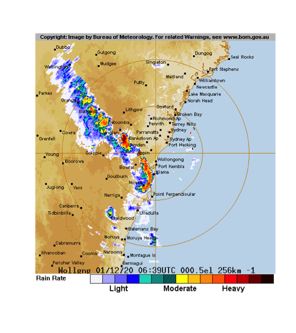
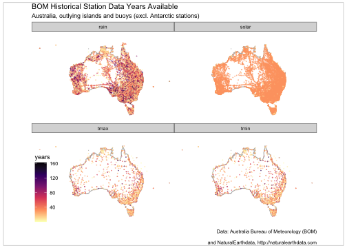

bomrang
Adam H Sparks, Jonathan Carroll, Dean Marchiori, Paul Melloy, Mark Padgham and Hugh Parsonage
Source:vignettes/bomrang.Rmd
bomrang.RmdIntroduction
bomrang provides functions for interacting with Australian Bureau of Meteorology (BOM) Weather Data Services forecasts. BOM serves several types of data data as XML, JSON and SHTML files. This package fetches these files, parses them and return a data frame. Satellite and radar imagery files are also made available to the public via anonymous FTP. bomrang provides functionality to query, fetch and create terra::SpatRaster() objects of the GeoTIFF imagery or a magick object of radar image.png files.
Using bomrang
Several functions are provided by bomrang to retrieve Australian Bureau of Meteorology (BOM) data. A family of functions retrieve weather data and return data frames; * get_precis_forecast(), which retrieves the précis (short) forecast; * get_current_weather(), which fetches the current weather from a given station; * get_ag_bulletin(), which retrieves the agriculture bulletin; * get_weather_bulletin(), which fetches the 0900 and 1500 weather bulletins; * get_coastal_forecast(), which fetches coastal waters forecasts for each state; and * get_historical() which fetches historical daily temperature min/max, rainfall, or solar exposure data. A second family of functions retrieve information pertaining to satellite and radar imagery, get_available_imagery() and the imagery itself, _imagery() for satellite, and get_available_radar() and get_radar_imagery() for radar images. The last group functions provides internal functionality for bomrang itself; update_forecast_towns(), which updates an internal database of forecast locations distributed with the package, sweep_for_stations() which returns the nearest weather stations to a point in Australia and, manage_cache() that provides facilities for managing cached satellite imagery.
Using get_current_weather()
get_current_weather() takes one of two arguments: station_name and latlon, returning the current weather observations (and the observations of the last 72 hours) for the given location.
If station_name is used, the weather observations for the last 72 hours are returned for that station. If the string provided is ambiguous, the function returns an observation for one of the possible stations and emits a warning to offer unambiguous station names.
If latlon is used, the observations returned are from the station nearest to that latitude-longitude coordinate. latlon values are entered as decimal degrees, e.g. latlon = c(-34, 151) for Sydney. The function also emits a message, to tell the user which station was used.
Example
Following is an example fetching the current weather for Melbourne.
Melbourne_weather <- get_current_weather("Melbourne (Olympic Park)")Using get_precis_forecast()
This function only takes one argument, state. The state parameter allows the user to select the forecast for just one state or a national forecast. States or territories are specified using the official postal codes or full name with fuzzy matching performed via agrep().
ACT - Australian Capital Territory
NSW - New South Wales
NT - Northern Territory
QLD - Queensland
SA - South Australia
TAS - Tasmania
VIC - Victoria
WA - Western Australia
AUS - Australia, returns national forecast including all states, NT and ACT.
Results
The function, get_precis_forecast(), will return a data frame of the weather forecast for the daily forecast for selected towns. See Appendix 1 for a full description of the fields and values.
Example
Following is an example fetching the forecast for Queensland.
(QLD_forecast <- get_precis_forecast(state = "QLD"))
#> index product_id state town aac lat lon elev start_time_local
#> 1: 0 IDQ11295 QLD Brisbane QLD_PT001 -27.48 153.0 8.1 2021-03-29 05:00:00
#> 2: 1 IDQ11295 QLD Brisbane QLD_PT001 -27.48 153.0 8.1 2021-03-30 00:00:00
#> 3: 2 IDQ11295 QLD Brisbane QLD_PT001 -27.48 153.0 8.1 2021-03-31 00:00:00
#> 4: 3 IDQ11295 QLD Brisbane QLD_PT001 -27.48 153.0 8.1 2021-04-01 00:00:00
#> 5: 4 IDQ11295 QLD Brisbane QLD_PT001 -27.48 153.0 8.1 2021-04-02 00:00:00
#> ---
#> 787: 2 IDQ11295 QLD Port Douglas QLD_PT254 -16.49 145.5 70.4 2021-03-31 00:00:00
#> 788: 3 IDQ11295 QLD Port Douglas QLD_PT254 -16.49 145.5 70.4 2021-04-01 00:00:00
#> 789: 4 IDQ11295 QLD Port Douglas QLD_PT254 -16.49 145.5 70.4 2021-04-02 00:00:00
#> 790: 5 IDQ11295 QLD Port Douglas QLD_PT254 -16.49 145.5 70.4 2021-04-03 00:00:00
#> 791: 6 IDQ11295 QLD Port Douglas QLD_PT254 -16.49 145.5 70.4 2021-04-04 00:00:00
#> end_time_local utc_offset start_time_utc end_time_utc minimum_temperature
#> 1: 2021-03-30 10:00 2021-03-28 19:00:00 2021-03-29 14:00:00 NA
#> 2: 2021-03-31 10:00 2021-03-29 14:00:00 2021-03-30 14:00:00 18
#> 3: 2021-04-01 10:00 2021-03-30 14:00:00 2021-03-31 14:00:00 17
#> 4: 2021-04-02 10:00 2021-03-31 14:00:00 2021-04-01 14:00:00 17
#> 5: 2021-04-03 10:00 2021-04-01 14:00:00 2021-04-02 14:00:00 18
#> ---
#> 787: 2021-04-01 10:00 2021-03-30 14:00:00 2021-03-31 14:00:00 25
#> 788: 2021-04-02 10:00 2021-03-31 14:00:00 2021-04-01 14:00:00 24
#> 789: 2021-04-03 10:00 2021-04-01 14:00:00 2021-04-02 14:00:00 24
#> 790: 2021-04-04 10:00 2021-04-02 14:00:00 2021-04-03 14:00:00 24
#> 791: 2021-04-05 10:00 2021-04-03 14:00:00 2021-04-04 14:00:00 24
#> maximum_temperature lower_precipitation_limit upper_precipitation_limit precis
#> 1: 28 0 3.0 Shower or two.
#> 2: 26 0 2.0 Possible shower.
#> 3: 26 0 1.0 Partly cloudy.
#> 4: 25 0 2.0 Shower or two.
#> 5: 26 0 0.4 Partly cloudy.
#> ---
#> 787: 29 1 5.0 Shower or two.
#> 788: 27 5 15.0 Showers.
#> 789: 28 4 20.0 Shower or two.
#> 790: 27 4 20.0 Showers.
#> 791: 29 2 15.0 Shower or two.
#> probability_of_precipitation
#> 1: 50
#> 2: 40
#> 3: 30
#> 4: 50
#> 5: 30
#> ---
#> 787: 50
#> 788: 80
#> 789: 70
#> 790: 80
#> 791: 60Using get_ag_bulletin()
get_ag_bulletin() only takes one argument, state. The state parameter allows the user to select the bulletin for just one state or a national forecast. States or territories are specified using the official postal codes or full name with fuzzy matching performed via agrep().
NSW - New South Wales
NT - Northern Territory
QLD - Queensland
SA - South Australia
TAS - Tasmania
VIC - Victoria
WA - Western Australia
AUS - Australia, returns bulletin for all states and NT.
Results
The function, get_ag_bulletin(), will return a data frame of the agriculture bulletin for selected stations. See Appendix 3 for a full list and description of the fields and values.
Example
Following is an example fetching the ag bulletin for Queensland.
(QLD_bulletin <- get_ag_bulletin(state = "QLD"))
#> product_id state dist name wmo site station
#> 1: IDQ60604 QLD 27 WEIPA AERO 94170 27045 Weipa
#> 2: IDQ60604 QLD 29 MOUNT ISA AERO 94332 29127 Mount Isa
#> 3: IDQ60604 QLD 30 GEORGETOWN AIRPORT 94274 30124 Georgetown Airport
#> 4: IDQ60604 QLD 31 CAIRNS AERO 94287 31011 Cairns
#> 5: IDQ60604 QLD 31 WALKAMIN RESEARCH STATION 95284 31108 Walkamin
#> 6: IDQ60604 QLD 31 MAREEBA AIRPORT 95286 31210 Mareeba
#> 7: IDQ60604 QLD 32 SOUTH JOHNSTONE EXP STN 95292 32037 South Johnstone
#> 8: IDQ60604 QLD 32 TOWNSVILLE AERO 94294 32040 Townsville
#> 9: IDQ60604 QLD 32 INGHAM COMPOSITE 95291 32078 Ingham
#> 10: IDQ60604 QLD 33 AYR DPI RESEARCH STN 95295 33002 Ayr
#> 11: IDQ60604 QLD 33 COLLINSVILLE POST OFFICE 94360 33013 Collinsville
#> 12: IDQ60604 QLD 33 MACKAY M.O 94367 33119 Mackay
#> 13: IDQ60604 QLD 35 TAMBO POST OFFICE 94355 35069 Tambo
#> 14: IDQ60604 QLD 35 EMERALD AIRPORT 94363 35264 Emerald
#> 15: IDQ60604 QLD 36 LONGREACH AERO 94346 36031 Longreach
#> 16: IDQ60604 QLD 38 BOULIA AIRPORT 94333 38003 Boulia
#> 17: IDQ60604 QLD 38 BIRDSVILLE AIRPORT 95482 38026 Birdsville
#> 18: IDQ60604 QLD 39 ROCKHAMPTON AERO 94374 39083 Rockhampton
#> 19: IDQ60604 QLD 39 THANGOOL AIRPORT 94376 39089 Thangool
#> 20: IDQ60604 QLD 39 BUNDABERG AERO 94387 39128 Bundaberg
#> 21: IDQ60604 QLD 40 UNIVERSITY OF QUEENSLAND GATTON 94562 40082 Gatton
#> 22: IDQ60604 QLD 40 BRISBANE AERO 94578 40842 Brisbane Airport
#> 23: IDQ60604 QLD 40 LOGAN CITY WATER TREATMENT PLANT 95581 40854 Logan City
#> 24: IDQ60604 QLD 41 OAKEY AERO 94552 41359 Oakey
#> 25: IDQ60604 QLD 41 DALBY AIRPORT 94542 41522 Dalby
#> 26: IDQ60604 QLD 41 WARWICK 94555 41525 Warwick
#> 27: IDQ60604 QLD 43 MITCHELL POST OFFICE 94514 43020 Mitchell
#> 28: IDQ60604 QLD 43 ROMA AIRPORT 94515 43091 Roma
#> 29: IDQ60604 QLD 43 ST GEORGE AIRPORT 94517 43109 St George
#> 30: IDQ60604 QLD 44 CHARLEVILLE AERO 94510 44021 Charleville
#> 31: IDQ60604 QLD 45 THARGOMINDAH AIRPORT 95492 45025 Thargomindah Airport
#> product_id state dist name wmo site station
#> obs_time_local obs_time_utc time_zone lat lon elev bar_ht start end r
#> 1: 2021-03-29 09:00:00 2021-03-28 23:00:00 EST -12.68 141.9 18.0 18.6 1972 2021 1.0
#> 2: 2021-03-29 09:00:00 2021-03-28 23:00:00 EST -20.68 139.5 340.3 341.0 1966 2021 0.0
#> 3: 2021-03-29 09:00:00 2021-03-28 23:00:00 EST -18.30 143.5 301.8 302.5 2004 2021 0.2
#> 4: 2021-03-29 09:00:00 2021-03-28 23:00:00 EST -16.87 145.7 2.2 2.6 1941 2021 31.4
#> 5: 2021-03-29 09:00:00 2021-03-28 23:00:00 EST -17.13 145.4 594.0 NA 1965 2021 1.6
#> 6: 2021-03-29 09:00:00 2021-03-28 23:00:00 EST -17.07 145.4 471.9 473.1 2000 2021 2.2
#> 7: 2021-03-29 09:00:00 2021-03-28 23:00:00 EST -17.61 146.0 18.3 18.6 1920 2021 1.2
#> 8: 2021-03-29 09:00:00 2021-03-28 23:00:00 EST -19.25 146.8 4.3 4.6 1940 2021 0.0
#> 9: 2021-03-29 09:00:00 2021-03-28 23:00:00 EST -18.65 146.2 11.8 12.5 1968 2021 NA
#> 10: 2021-03-29 09:00:00 2021-03-28 23:00:00 EST -19.62 147.4 17.0 NA 1951 2021 0.0
#> 11: 2021-03-29 09:00:00 2021-03-28 23:00:00 EST -20.55 147.8 196.0 NA 1939 2021 0.0
#> 12: 2021-03-29 09:00:00 2021-03-28 23:00:00 EST -21.12 149.2 30.3 30.3 1959 2021 0.0
#> 13: 2021-03-29 09:00:00 2021-03-28 23:00:00 EST -24.88 146.3 395.1 397.4 1877 2021 0.0
#> 14: 2021-03-29 09:00:00 2021-03-28 23:00:00 EST -23.57 148.2 189.4 190.1 1981 2021 0.0
#> 15: 2021-03-29 09:00:00 2021-03-28 23:00:00 EST -23.44 144.3 192.2 192.5 1949 2021 0.0
#> 16: 2021-03-29 09:00:00 2021-03-28 23:00:00 EST -22.91 139.9 161.8 158.3 1886 2021 0.0
#> 17: 2021-03-29 09:00:00 2021-03-28 23:00:00 EST -25.90 139.3 46.6 47.0 2000 2021 0.0
#> 18: 2021-03-29 09:00:00 2021-03-28 23:00:00 EST -23.38 150.5 10.4 15.1 1939 2021 0.0
#> 19: 2021-03-29 09:00:00 2021-03-28 23:00:00 EST -24.49 150.6 193.1 193.8 1929 2021 0.0
#> 20: 2021-03-29 09:00:00 2021-03-28 23:00:00 EST -24.91 152.3 30.8 31.5 1942 2021 0.0
#> 21: 2021-03-29 09:00:00 2021-03-28 23:00:00 EST -27.54 152.3 89.0 NA 1897 2021 0.0
#> 22: 2021-03-29 09:00:00 2021-03-28 23:00:00 EST -27.39 153.1 4.5 9.5 1992 2021 0.0
#> 23: 2021-03-29 09:00:00 2021-03-28 23:00:00 EST -27.68 153.2 14.0 NA 1992 2021 0.0
#> 24: 2021-03-29 09:00:00 2021-03-28 23:00:00 EST -27.40 151.7 405.7 407.1 1970 2021 0.0
#> 25: 2021-03-29 09:00:00 2021-03-28 23:00:00 EST -27.16 151.3 343.9 344.4 1992 2021 0.0
#> 26: 2021-03-29 09:00:00 2021-03-28 23:00:00 EST -28.21 152.1 475.4 475.8 1994 2021 0.0
#> 27: 2021-03-29 09:00:00 2021-03-28 23:00:00 EST -26.49 148.0 336.5 338.0 1884 2021 0.0
#> 28: 2021-03-29 09:00:00 2021-03-28 23:00:00 EST -26.55 148.8 307.4 307.8 1985 2021 0.0
#> 29: 2021-03-29 09:00:00 2021-03-28 23:00:00 EST -28.05 148.6 198.5 199.1 1997 2021 0.0
#> 30: 2021-03-29 09:00:00 2021-03-28 23:00:00 EST -26.41 146.3 301.6 303.3 1942 2021 0.0
#> 31: 2021-03-29 09:00:00 2021-03-28 23:00:00 EST -27.99 143.8 130.9 131.4 1999 2021 0.0
#> obs_time_local obs_time_utc time_zone lat lon elev bar_ht start end r
#> tn tx twd ev tg sn solr t5 t10 t20 t50 t1m wr
#> 1: 25.7 34.3 3.7 NA NA NA 25.3 NA NA NA NA NA NA
#> 2: 22.8 36.0 10.7 NA NA NA 23.9 NA NA NA NA NA NA
#> 3: 22.2 34.0 6.8 NA NA NA 22.8 NA NA NA NA NA NA
#> 4: 23.4 29.5 4.4 NA NA NA 14.7 NA NA NA NA NA NA
#> 5: 20.3 27.5 3.9 2.4 19.6 NA 14.7 NA 24.0 26.0 NA NA 282
#> 6: 21.7 28.9 5.4 NA NA NA 15.2 25.1 NA 26.0 NA 28.2 303
#> 7: 22.5 30.1 3.7 NA NA NA 16.6 26.7 26.7 27.6 28.2 NA NA
#> 8: 24.5 31.5 3.9 NA NA NA 24.2 NA NA NA NA NA NA
#> 9: 23.4 31.2 1.7 NA NA NA 22.8 NA NA NA NA NA NA
#> 10: 21.6 31.8 NA NA NA NA 24.2 27.6 27.5 29.5 28.8 30.0 160
#> 11: 19.3 32.6 3.9 6.2 NA NA 23.0 NA NA NA NA NA NA
#> 12: 21.5 29.8 5.4 NA NA NA 24.0 NA NA NA NA NA NA
#> 13: 15.2 31.2 5.1 4.0 13.3 NA 21.4 NA NA NA NA NA NA
#> 14: 20.2 33.2 5.4 NA NA NA 21.6 31.7 29.0 29.1 29.8 NA NA
#> 15: 20.5 35.0 7.1 NA NA NA 23.3 NA 27.1 28.7 30.2 31.0 NA
#> 16: 20.8 NA 9.0 17.4 NA NA 23.4 NA NA NA NA NA NA
#> 17: 19.4 32.0 7.6 NA NA NA 22.1 NA NA NA NA NA NA
#> 18: 21.8 31.5 4.2 NA NA NA 20.1 NA NA NA NA NA NA
#> 19: 17.5 31.9 5.4 NA NA NA 20.9 NA NA NA NA NA NA
#> 20: 19.6 30.7 3.8 NA NA NA 19.6 24.4 24.9 25.8 26.1 NA 133
#> 21: 17.1 30.6 NA NA NA NA 21.4 34.3 22.9 24.1 24.5 NA 114
#> 22: 18.3 30.7 5.0 NA 15.9 9.2 21.2 26.0 25.0 25.0 26.0 25.0 163
#> 23: 18.0 29.8 3.8 NA NA NA 21.1 NA NA NA NA NA NA
#> 24: 12.6 27.8 3.4 NA NA NA 20.7 NA NA NA NA NA NA
#> 25: 13.6 28.9 6.7 NA NA NA 21.4 21.1 NA 22.1 NA 24.4 116
#> 26: 11.3 26.8 3.3 NA NA NA 19.8 NA NA NA NA NA NA
#> 27: 13.4 30.4 4.9 NA 13.1 NA 20.9 NA NA NA NA NA NA
#> 28: 12.3 30.2 4.4 NA NA NA 20.9 22.1 21.5 23.3 23.9 NA 73
#> 29: 13.7 29.0 7.1 NA NA NA 17.7 23.6 22.7 23.7 26.7 28.1 NA
#> 30: 15.9 32.3 9.1 NA NA NA 20.4 NA NA NA NA NA NA
#> 31: 19.6 30.7 8.4 NA NA NA 20.8 NA NA NA NA NA NA
#> tn tx twd ev tg sn solr t5 t10 t20 t50 t1m wrUsing get_weather_bulletin()
This function takes two arguments, state for the desired state; and morning if TRUE, return the 9am bulletin for the nominated state; otherwise return the 3pm bulletin. States or territories are specified using the official postal codes.
ACT Australian Capital Territory (will return NSW)
NSW - New South Wales
NT - Northern Territory
QLD - Queensland
SA - South Australia
TAS - Tasmania
VIC - Victoria
WA - Western Australia
Results
The function get_weather_bulletin() will return a data frame of BOM data for the requested state(s) or territory.
Example
Following is an example fetching the 9AM bulletin for Queensland.
(qld_weather <- get_weather_bulletin(state = "QLD", morning = TRUE))
#> stations cld8ths wind_dir wind_speed_kmh temp_c_dry temp_c_dew temp_c_max temp_c_min
#> 1: Coconut Is NA <NA> NA 30 NA 36 28
#> 2: Coen Ap NA ESE 24 27 23 NA NA
#> 3: Horn Is 3 ESE 28 30 25 33 28
#> 4: Lockhart River 8 ESE 26 29 25 32 27
#> 5: Palmerville NA E 13 27 20 33 21
#> ---
#> 130: Hobart NA SW 20 13 3 NA NA
#> 131: Adelaide NA CALM NA 19 11 NA NA
#> 132: Perth Ap NA NW 6 19 11 NA NA
#> 133: Darwin 7 SE 11 28 23 33 25
#> 134: Alice Springs NA ESE 17 23 9 31 16
#> temp_c_gr barhpa rain_mm_24hr_days weather seastate_sea_swell_dir
#> 1: NA 1007 NA <NA> <NA>
#> 2: NA 1009 NA <NA> <NA>
#> 3: NA 1007 0.2 <NA> <NA>
#> 4: NA 1009 1.0 <NA> <NA>
#> 5: NA 1010 2.0 <NA> <NA>
#> ---
#> 130: NA 1021 NA <NA> <NA>
#> 131: NA 1026 NA <NA> <NA>
#> 132: NA 1013 NA <NA> <NA>
#> 133: 24 1009 0.2 <NA> <NA>
#> 134: NA 1018 NA <NA> <NA>Following is an example fetching the 3PM bulletin for Queensland.
(qld_weather <- get_weather_bulletin(state = "QLD"))
#> stations cld8ths wind_dir wind_speed_kmh temp_c_dry temp_c_dew temp_c_max temp_c_min
#> 1: Coconut Is NA <NA> NA 30 NA 36 28
#> 2: Coen Ap NA ESE 24 27 23 NA NA
#> 3: Horn Is 3 ESE 28 30 25 33 28
#> 4: Lockhart River 8 ESE 26 29 25 32 27
#> 5: Palmerville NA E 13 27 20 33 21
#> ---
#> 130: Hobart NA SW 20 13 3 NA NA
#> 131: Adelaide NA CALM NA 19 11 NA NA
#> 132: Perth Ap NA NW 6 19 11 NA NA
#> 133: Darwin 7 SE 11 28 23 33 25
#> 134: Alice Springs NA ESE 17 23 9 31 16
#> temp_c_gr barhpa rain_mm_24hr_days weather seastate_sea_swell_dir
#> 1: NA 1007 NA <NA> <NA>
#> 2: NA 1009 NA <NA> <NA>
#> 3: NA 1007 0.2 <NA> <NA>
#> 4: NA 1009 1.0 <NA> <NA>
#> 5: NA 1010 2.0 <NA> <NA>
#> ---
#> 130: NA 1021 NA <NA> <NA>
#> 131: NA 1026 NA <NA> <NA>
#> 132: NA 1013 NA <NA> <NA>
#> 133: 24 1009 0.2 <NA> <NA>
#> 134: NA 1018 NA <NA> <NA>Using get_coastal_forecast()
This function only takes one argument, state. The state parameter allows the user to select the forecast for just one state or a national forecast. States or territories are specified using the official postal codes or full name with fuzzy matching performed via agrep()
ACT - Australian Capital Territory
NSW - New South Wales
NT - Northern Territory
QLD - Queensland
SA - South Australia
TAS - Tasmania
VIC - Victoria
WA - Western Australia
AUS - Australia, returns national forecast including all states, NT and ACT.
Results
The function, get_coastal_forecast(), will return a data frame of the coastal waters forecast for marine zones in each state. See Appendix 6 for a full description of the fields and values.
Example
Following is an example fetching the forecast for Queensland.
(QLD_coastal_forecast <- get_coastal_forecast(state = "QLD"))
#> index product_id type state_code
#> 1: <NA> IDQ11290 <NA> QLD
#> 2: <NA> IDQ11290 <NA> QLD
#> 3: <NA> IDQ11290 <NA> QLD
#> 4: <NA> IDQ11290 <NA> QLD
#> 5: 0 IDQ11290 <NA> QLD
#> 6: 1 IDQ11290 <NA> QLD
#> 7: 2 IDQ11290 <NA> QLD
#> 8: 0 IDQ11290 <NA> QLD
#> 9: 1 IDQ11290 <NA> QLD
#> 10: 2 IDQ11290 <NA> QLD
#> 11: 0 IDQ11290 Coastal QLD
#> 12: 1 IDQ11290 Coastal QLD
#> 13: 2 IDQ11290 Coastal QLD
#> 14: 0 IDQ11290 <NA> QLD
#> 15: 1 IDQ11290 <NA> QLD
#> 16: 2 IDQ11290 <NA> QLD
#> 17: 0 IDQ11290 <NA> QLD
#> 18: 1 IDQ11290 <NA> QLD
#> 19: 2 IDQ11290 <NA> QLD
#> 20: 0 IDQ11290 <NA> QLD
#> 21: 1 IDQ11290 <NA> QLD
#> 22: 2 IDQ11290 <NA> QLD
#> 23: 0 IDQ11290 <NA> QLD
#> 24: 1 IDQ11290 <NA> QLD
#> 25: 2 IDQ11290 <NA> QLD
#> 26: 0 IDQ11290 <NA> QLD
#> 27: 1 IDQ11290 <NA> QLD
#> 28: 2 IDQ11290 <NA> QLD
#> 29: 0 IDQ11290 <NA> QLD
#> 30: 1 IDQ11290 <NA> QLD
#> 31: 2 IDQ11290 <NA> QLD
#> 32: 0 IDQ11290 Local QLD
#> 33: 1 IDQ11290 Local QLD
#> 34: 2 IDQ11290 Local QLD
#> 35: 0 IDQ11290 <NA> QLD
#> 36: 1 IDQ11290 <NA> QLD
#> 37: 2 IDQ11290 <NA> QLD
#> 38: 0 IDQ11290 <NA> QLD
#> 39: 1 IDQ11290 <NA> QLD
#> 40: 2 IDQ11290 <NA> QLD
#> 41: 0 IDQ11290 Local QLD
#> 42: 1 IDQ11290 Local QLD
#> 43: 2 IDQ11290 Local QLD
#> 44: 0 IDQ11290 <NA> QLD
#> 45: 1 IDQ11290 <NA> QLD
#> dist_name pt_1_name pt_2_name aac
#> 1: Queensland <NA> <NA> QLD_FA001
#> 2: Queensland Gulf of Carpentaria <NA> <NA> QLD_FA002
#> 3: North Queensland <NA> <NA> QLD_FA003
#> 4: South Queensland <NA> <NA> QLD_FA004
#> 5: South East Gulf of Carpentaria: QLD-NT Border to Cape Keerweer <NA> <NA> QLD_MW001
#> 6: South East Gulf of Carpentaria: QLD-NT Border to Cape Keerweer <NA> <NA> QLD_MW001
#> 7: South East Gulf of Carpentaria: QLD-NT Border to Cape Keerweer <NA> <NA> QLD_MW001
#> 8: North East Gulf of Carpentaria: Cape Keerweer to Crab Island <NA> <NA> QLD_MW002
#> 9: North East Gulf of Carpentaria: Cape Keerweer to Crab Island <NA> <NA> QLD_MW002
#> 10: North East Gulf of Carpentaria: Cape Keerweer to Crab Island <NA> <NA> QLD_MW002
#> 11: Torres Strait <NA> <NA> QLD_MW003
#> 12: Torres Strait <NA> <NA> QLD_MW003
#> 13: Torres Strait <NA> <NA> QLD_MW003
#> 14: Peninsula Coast: Sharp Point to Cape Melville <NA> <NA> QLD_MW004
#> 15: Peninsula Coast: Sharp Point to Cape Melville <NA> <NA> QLD_MW004
#> 16: Peninsula Coast: Sharp Point to Cape Melville <NA> <NA> QLD_MW004
#> 17: Cooktown Coast: Cape Melville to Cape Tribulation <NA> <NA> QLD_MW005
#> 18: Cooktown Coast: Cape Melville to Cape Tribulation <NA> <NA> QLD_MW005
#> 19: Cooktown Coast: Cape Melville to Cape Tribulation <NA> <NA> QLD_MW005
#> 20: Cairns Coast: Cape Tribulation to Cardwell <NA> <NA> QLD_MW006
#> 21: Cairns Coast: Cape Tribulation to Cardwell <NA> <NA> QLD_MW006
#> 22: Cairns Coast: Cape Tribulation to Cardwell <NA> <NA> QLD_MW006
#> 23: Townsville Coast: Cardwell to Bowen <NA> <NA> QLD_MW007
#> 24: Townsville Coast: Cardwell to Bowen <NA> <NA> QLD_MW007
#> 25: Townsville Coast: Cardwell to Bowen <NA> <NA> QLD_MW007
#> 26: Mackay Coast: Bowen to St Lawrence <NA> <NA> QLD_MW008
#> 27: Mackay Coast: Bowen to St Lawrence <NA> <NA> QLD_MW008
#> 28: Mackay Coast: Bowen to St Lawrence <NA> <NA> QLD_MW008
#> 29: Capricornia Coast: St Lawrence to Burnett Heads <NA> <NA> QLD_MW009
#> 30: Capricornia Coast: St Lawrence to Burnett Heads <NA> <NA> QLD_MW009
#> 31: Capricornia Coast: St Lawrence to Burnett Heads <NA> <NA> QLD_MW009
#> 32: Hervey Bay <NA> <NA> QLD_MW010
#> 33: Hervey Bay <NA> <NA> QLD_MW010
#> 34: Hervey Bay <NA> <NA> QLD_MW010
#> 35: Fraser Island Coast: Sandy Cape to Double Island Point <NA> <NA> QLD_MW011
#> 36: Fraser Island Coast: Sandy Cape to Double Island Point <NA> <NA> QLD_MW011
#> 37: Fraser Island Coast: Sandy Cape to Double Island Point <NA> <NA> QLD_MW011
#> 38: Sunshine Coast Waters: Double Island Point to Cape Moreton <NA> <NA> QLD_MW012
#> 39: Sunshine Coast Waters: Double Island Point to Cape Moreton <NA> <NA> QLD_MW012
#> 40: Sunshine Coast Waters: Double Island Point to Cape Moreton <NA> <NA> QLD_MW012
#> 41: Moreton Bay <NA> <NA> QLD_MW013
#> 42: Moreton Bay <NA> <NA> QLD_MW013
#> 43: Moreton Bay <NA> <NA> QLD_MW013
#> 44: Gold Coast Waters: Cape Moreton to Point Danger <NA> <NA> QLD_MW014
#> 45: Gold Coast Waters: Cape Moreton to Point Danger <NA> <NA> QLD_MW014
#> start_time_local end_time_local utc_offset start_time_utc end_time_utc
#> 1: 2021-03-29 10:00:19 2021-03-29 10:00:19 10:00 2021-03-29 10:00:19 2021-03-29 10:00:19
#> 2: 2021-03-29 05:00:00 2021-03-29 05:00:00 10:00 2021-03-29 05:00:00 2021-03-29 05:00:00
#> 3: 2021-03-29 05:00:00 2021-03-29 05:00:00 10:00 2021-03-29 05:00:00 2021-03-29 05:00:00
#> 4: 2021-03-29 05:00:00 2021-03-29 05:00:00 10:00 2021-03-29 05:00:00 2021-03-29 05:00:00
#> 5: 2021-03-29 05:00:00 2021-03-29 05:00:00 10:00 2021-03-29 05:00:00 2021-03-29 05:00:00
#> 6: 2021-03-30 00:00:00 2021-03-30 00:00:00 10:00 2021-03-30 00:00:00 2021-03-30 00:00:00
#> 7: 2021-03-31 00:00:00 2021-03-31 00:00:00 10:00 2021-03-31 00:00:00 2021-03-31 00:00:00
#> 8: 2021-03-29 05:00:00 2021-03-29 05:00:00 10:00 2021-03-29 05:00:00 2021-03-29 05:00:00
#> 9: 2021-03-30 00:00:00 2021-03-30 00:00:00 10:00 2021-03-30 00:00:00 2021-03-30 00:00:00
#> 10: 2021-03-31 00:00:00 2021-03-31 00:00:00 10:00 2021-03-31 00:00:00 2021-03-31 00:00:00
#> 11: 2021-03-29 05:00:00 2021-03-29 05:00:00 10:00 2021-03-29 05:00:00 2021-03-29 05:00:00
#> 12: 2021-03-30 00:00:00 2021-03-30 00:00:00 10:00 2021-03-30 00:00:00 2021-03-30 00:00:00
#> 13: 2021-03-31 00:00:00 2021-03-31 00:00:00 10:00 2021-03-31 00:00:00 2021-03-31 00:00:00
#> 14: 2021-03-29 05:00:00 2021-03-29 05:00:00 10:00 2021-03-29 05:00:00 2021-03-29 05:00:00
#> 15: 2021-03-30 00:00:00 2021-03-30 00:00:00 10:00 2021-03-30 00:00:00 2021-03-30 00:00:00
#> 16: 2021-03-31 00:00:00 2021-03-31 00:00:00 10:00 2021-03-31 00:00:00 2021-03-31 00:00:00
#> 17: 2021-03-29 05:00:00 2021-03-29 05:00:00 10:00 2021-03-29 05:00:00 2021-03-29 05:00:00
#> 18: 2021-03-30 00:00:00 2021-03-30 00:00:00 10:00 2021-03-30 00:00:00 2021-03-30 00:00:00
#> 19: 2021-03-31 00:00:00 2021-03-31 00:00:00 10:00 2021-03-31 00:00:00 2021-03-31 00:00:00
#> 20: 2021-03-29 05:00:00 2021-03-29 05:00:00 10:00 2021-03-29 05:00:00 2021-03-29 05:00:00
#> 21: 2021-03-30 00:00:00 2021-03-30 00:00:00 10:00 2021-03-30 00:00:00 2021-03-30 00:00:00
#> 22: 2021-03-31 00:00:00 2021-03-31 00:00:00 10:00 2021-03-31 00:00:00 2021-03-31 00:00:00
#> 23: 2021-03-29 05:00:00 2021-03-29 05:00:00 10:00 2021-03-29 05:00:00 2021-03-29 05:00:00
#> 24: 2021-03-30 00:00:00 2021-03-30 00:00:00 10:00 2021-03-30 00:00:00 2021-03-30 00:00:00
#> 25: 2021-03-31 00:00:00 2021-03-31 00:00:00 10:00 2021-03-31 00:00:00 2021-03-31 00:00:00
#> 26: 2021-03-29 05:00:00 2021-03-29 05:00:00 10:00 2021-03-29 05:00:00 2021-03-29 05:00:00
#> 27: 2021-03-30 00:00:00 2021-03-30 00:00:00 10:00 2021-03-30 00:00:00 2021-03-30 00:00:00
#> 28: 2021-03-31 00:00:00 2021-03-31 00:00:00 10:00 2021-03-31 00:00:00 2021-03-31 00:00:00
#> 29: 2021-03-29 05:00:00 2021-03-29 05:00:00 10:00 2021-03-29 05:00:00 2021-03-29 05:00:00
#> 30: 2021-03-30 00:00:00 2021-03-30 00:00:00 10:00 2021-03-30 00:00:00 2021-03-30 00:00:00
#> 31: 2021-03-31 00:00:00 2021-03-31 00:00:00 10:00 2021-03-31 00:00:00 2021-03-31 00:00:00
#> 32: 2021-03-29 05:00:00 2021-03-29 05:00:00 10:00 2021-03-29 05:00:00 2021-03-29 05:00:00
#> 33: 2021-03-30 00:00:00 2021-03-30 00:00:00 10:00 2021-03-30 00:00:00 2021-03-30 00:00:00
#> 34: 2021-03-31 00:00:00 2021-03-31 00:00:00 10:00 2021-03-31 00:00:00 2021-03-31 00:00:00
#> 35: 2021-03-29 05:00:00 2021-03-29 05:00:00 10:00 2021-03-29 05:00:00 2021-03-29 05:00:00
#> 36: 2021-03-30 00:00:00 2021-03-30 00:00:00 10:00 2021-03-30 00:00:00 2021-03-30 00:00:00
#> 37: 2021-03-31 00:00:00 2021-03-31 00:00:00 10:00 2021-03-31 00:00:00 2021-03-31 00:00:00
#> 38: 2021-03-29 05:00:00 2021-03-29 05:00:00 10:00 2021-03-29 05:00:00 2021-03-29 05:00:00
#> 39: 2021-03-30 00:00:00 2021-03-30 00:00:00 10:00 2021-03-30 00:00:00 2021-03-30 00:00:00
#> 40: 2021-03-31 00:00:00 2021-03-31 00:00:00 10:00 2021-03-31 00:00:00 2021-03-31 00:00:00
#> 41: 2021-03-29 05:00:00 2021-03-29 05:00:00 10:00 2021-03-29 05:00:00 2021-03-29 05:00:00
#> 42: 2021-03-30 00:00:00 2021-03-30 00:00:00 10:00 2021-03-30 00:00:00 2021-03-30 00:00:00
#> 43: 2021-03-31 00:00:00 2021-03-31 00:00:00 10:00 2021-03-31 00:00:00 2021-03-31 00:00:00
#> 44: 2021-03-29 05:00:00 2021-03-29 05:00:00 10:00 2021-03-29 05:00:00 2021-03-29 05:00:00
#> 45: 2021-03-30 00:00:00 2021-03-30 00:00:00 10:00 2021-03-30 00:00:00 2021-03-30 00:00:00
#> forecast_seas
#> 1: <NA>
#> 2: <NA>
#> 3: <NA>
#> 4: <NA>
#> 5: 1 to 1.5 metres, decreasing to 1 metre later in the evening.
#> 6: Around 1 metre, increasing to 1 to 1.5 metres during the morning.
#> 7: 1 to 1.5 metres, increasing to 1 to 2 metres during the morning.
#> 8: 1.5 to 2 metres, decreasing to 1 to 1.5 metres during the afternoon.
#> 9: 1.5 to 2 metres, decreasing to 1 to 1.5 metres during the afternoon.
#> 10: Around 1 metre, increasing to 1 to 2 metres offshore.
#> 11: 1 to 2 metres.
#> 12: 1 to 2 metres, decreasing to 1 to 1.5 metres during the morning.
#> 13: 1 to 1.5 metres.
#> 14: 1.5 to 2 metres.
#> 15: 1 to 2 metres, increasing to 2 to 3 metres outside the reef.
#> 16: 1 to 2 metres, increasing to 2 to 3 metres outside the reef.
#> 17: 1 to 1.5 metres, increasing to 2 metres outside the reef.
#> 18: 2 to 3 metres.
#> 19: 1.5 to 2 metres, increasing to 2.5 to 3 metres outside the reef.
#> 20: 1.5 to 2 metres.
#> 21: 1.5 to 2 metres, increasing to 2 to 3 metres during the morning.
#> 22: 1 to 2 metres, increasing to 2.5 to 3 metres outside the reef.
#> 23: 1 to 2 metres.
#> 24: 1.5 to 2.5 metres.
#> 25: 2 to 3 metres.
#> 26: 1 to 1.5 metres, increasing to 1 to 2 metres during the morning.
#> 27: 1.5 to 2.5 metres.
#> 28: 2 to 3 metres.
#> 29: Around 1 metre, increasing to 1 to 1.5 metres in the afternoon.
#> 30: 1 to 1.5 metres, increasing to 1.5 to 2.5 metres during the morning.
#> 31: 2.5 to 3 metres.
#> 32: Below 1 metre.
#> 33: 1 to 1.5 metres, increasing to 1 to 2 metres during the morning.
#> 34: 1 to 2 metres.
#> 35: Below 1 metre.
#> 36: 1 to 1.5 metres increasing to 1.5 to 2 metres during the afternoon.
#> 37: 2 metres.
#> 38: Around 1 metre.
#> 39: 1 to 1.5 metres, increasing to 1.5 to 2 metres during the morning.
#> 40: 2 metres.
#> 41: Around 1 metre.
#> 42: 1 to 1.5 metres.
#> 43: 1 to 1.5 metres.
#> 44: Below 1 metre, increasing to 1 to 1.5 metres by early evening.
#> 45: 1.5 to 2 metres.
#> forecast_weather
#> 1: <NA>
#> 2: <NA>
#> 3: <NA>
#> 4: <NA>
#> 5: Partly cloudy. The chance of a thunderstorm.
#> 6: Mostly sunny. The chance of a thunderstorm.
#> 7: Mostly sunny. The chance of a thunderstorm.
#> 8: Partly cloudy. 60% chance of showers. The chance of a thunderstorm.
#> 9: Partly cloudy. 60% chance of showers. The chance of a thunderstorm.
#> 10: Partly cloudy. 60% chance of showers. The chance of a thunderstorm.
#> 11: Cloudy. 90% chance of showers. The chance of a thunderstorm.
#> 12: Cloudy. 95% chance of showers. The chance of a thunderstorm.
#> 13: Cloudy. 90% chance of showers. The chance of a thunderstorm.
#> 14: Partly cloudy. 60% chance of showers.
#> 15: Partly cloudy. 80% chance of showers.
#> 16: Partly cloudy. 70% chance of showers. The chance of a thunderstorm.
#> 17: Cloudy. 90% chance of showers. The chance of a thunderstorm this morning.
#> 18: Partly cloudy. 70% chance of showers.
#> 19: Partly cloudy. 60% chance of showers.
#> 20: Partly cloudy. The chance of a thunderstorm offshore north of Cairns this morning.
#> 21: Partly cloudy.
#> 22: Partly cloudy. 60% chance of showers.
#> 23: Mostly sunny.
#> 24: Partly cloudy.
#> 25: Partly cloudy.
#> 26: Mostly sunny.
#> 27: Partly cloudy.
#> 28: Partly cloudy. 50% chance of showers.
#> 29: Mostly sunny day. The chance of a thunderstorm inshore later tonight.
#> 30: Partly cloudy. 50% chance of showers. The chance of a thunderstorm.
#> 31: Partly cloudy.
#> 32: Partly cloudy. The chance of a thunderstorm during this afternoon and evening.
#> 33: Partly cloudy. 60% chance of showers. The chance of a thunderstorm in the morning.
#> 34: Partly cloudy.
#> 35: Partly cloudy. The chance of a thunderstorm this evening.
#> 36: Partly cloudy. 60% chance of showers. The chance of a thunderstorm.
#> 37: Partly cloudy.
#> 38: Partly cloudy. 60% chance of showers. The chance of a thunderstorm.
#> 39: Partly cloudy. 80% chance of showers. The chance of a thunderstorm.
#> 40: Partly cloudy. 50% chance of showers.
#> 41: Partly cloudy. 60% chance of showers. The chance of a thunderstorm.
#> 42: Partly cloudy. 70% chance of showers. The chance of a thunderstorm in the morning.
#> 43: Partly cloudy. 50% chance of showers.
#> 44: Partly cloudy. 70% chance of showers. The chance of a thunderstorm.
#> 45: Partly cloudy. 70% chance of showers. The chance of a thunderstorm.
#> forecast_winds
#> 1: <NA>
#> 2: <NA>
#> 3: <NA>
#> 4: <NA>
#> 5: Easterly 15 to 20 knots turning southeasterly in the early afternoon.
#> 6: East to southeasterly 15 to 20 knots.
#> 7: East to southeasterly 15 to 25 knots.
#> 8: East to southeasterly 15 to 20 knots, reaching up to 25 knots offshore at times.
#> 9: East to southeasterly 15 to 20 knots, reaching up to 25 knots offshore at times.
#> 10: East to southeasterly 15 to 20 knots, reaching up to 25 knots offshore at times.
#> 11: East to southeasterly 15 to 20 knots, reaching up to 25 knots at times.
#> 12: East to southeasterly 15 to 20 knots.
#> 13: Southeasterly 15 to 20 knots.
#> 14: Southeasterly 20 to 25 knots, tending easterly inshore south of Lockhart River during the afternoon.
#> 15: Southeasterly 20 to 25 knots increasing to 20 to 30 knots south of Cape Weymouth in the morning.
#> 16: Southeasterly 20 to 25 knots, reaching up to 30 knots south of Lockhart River.
#> 17: Southeasterly 20 to 25 knots.
#> 18: Southeasterly 20 to 25 knots, reaching up to 30 knots at times.
#> 19: Southeasterly 25 to 30 knots.
#> 20: Southeasterly 20 to 25 knots.
#> 21: Southeasterly 20 to 30 knots.
#> 22: Southeasterly 25 to 30 knots.
#> 23: Southeasterly 15 to 25 knots, with inshore afternoon sea breezes tending easterly.
#> 24: Southeasterly 20 to 25 knots increasing to 25 to 30 knots in the morning.
#> 25: Southeasterly 25 to 30 knots.
#> 26: East to southeasterly 15 to 20 knots. Inshore winds up to 10 knots lighter south of Mackay during the early morning.
#> 27: Southeasterly 20 to 25 knots, reaching up to 30 knots during the day.
#> 28: Southeasterly 20 to 30 knots.
#> 29: East to southeasterly 10 to 15 knots, tending southeasterly 15 to 20 knots in the morning. Winds increasing to 20 to 25 knots in the afternoon.
#> 30: Southeasterly 15 to 25 knots increasing to 25 to 30 knots in the evening.
#> 31: Southeasterly 25 to 30 knots.
#> 32: East to southeasterly about 10 knots tending southeasterly 10 to 15 knots in the morning.
#> 33: Southeasterly 15 to 25 knots.
#> 34: Southeasterly 20 to 25 knots.
#> 35: East to southeasterly 10 to 15 knots, reaching up to 20 knots in the evening.
#> 36: Southeasterly 20 to 25 knots.
#> 37: Southeasterly 20 to 25 knots.
#> 38: Variable about 10 knots becoming southeasterly 10 to 15 knots in the middle of the day. Winds reaching up to 20 knots offshore in the evening.
#> 39: Southeasterly 15 to 20 knots.
#> 40: Southeasterly 15 to 20 knots.
#> 41: Variable about 10 knots becoming southeasterly 10 to 15 knots in the morning.
#> 42: Southeasterly 15 to 20 knots.
#> 43: South to southeasterly 15 to 20 knots.
#> 44: South to southeasterly 10 to 15 knots, reaching up to 20 knots at times in the afternoon and evening.
#> 45: Southeasterly 15 to 20 knots.
#> forecast_swell1
#> 1: <NA>
#> 2: <NA>
#> 3: <NA>
#> 4: <NA>
#> 5: <NA>
#> 6: <NA>
#> 7: <NA>
#> 8: Below 0.5 metres.
#> 9: <NA>
#> 10: <NA>
#> 11: East to southeasterly 1 to 1.5 metres, decreasing to around 1 metre later in the evening.
#> 12: East to southeasterly below 1 metre, increasing to 1 to 1.5 metres outside the reef.
#> 13: East to southeasterly below 1 metre, increasing to 1 to 1.5 metres outside the reef.
#> 14: Southeasterly 1 to 1.5 metres outside the reef.
#> 15: Southeasterly below 1 metre, increasing to 1 to 2 metres outside the reef.
#> 16: Southeasterly below 1 metre, increasing to 1 to 2 metres outside the reef.
#> 17: Southeasterly 1 to 1.5 metres outside the reef.
#> 18: East to southeasterly below 1 metre, increasing to 1 to 2 metres outside the reef.
#> 19: Southeasterly below 1 metre, increasing to 1 to 2 metres outside the reef.
#> 20: Southeasterly 1 to 1.5 metres outside the reef.
#> 21: Southeasterly below 1 metre, increasing to 1 to 2 metres outside the reef.
#> 22: Southeasterly below 1 metre, increasing to 1.5 to 2.5 metres outside the reef.
#> 23: Easterly around 1 metre outside the reef.
#> 24: Easterly around 1 metre, increasing to 1 to 1.5 metres around midday.
#> 25: Easterly 1 to 1.5 metres outside the reef, increasing to 1 to 2 metres during the morning.
#> 26: East to northeasterly below 1 metre.
#> 27: Easterly around 1 metre offshore.
#> 28: Easterly below 1 metre inshore, increasing to 1 to 1.5 metres offshore.
#> 29: Easterly below 1 metre.
#> 30: Easterly around 1 metre.
#> 31: Easterly below 1 metre inshore, increasing to 1 to 1.5 metres offshore.
#> 32: Below 0.5 metres in the northern bay.
#> 33: Northeasterly below 1 metre in the northern bay.
#> 34: Northeasterly below 1 metre.
#> 35: Easterly below 1 metre.
#> 36: East to southeasterly around 1 metre.
#> 37: Southeasterly 1 to 1.5 metres.
#> 38: Easterly below 1 metre.
#> 39: East to southeasterly below 1 metre.
#> 40: South to southeasterly 1 to 1.5 metres.
#> 41: <NA>
#> 42: <NA>
#> 43: <NA>
#> 44: Easterly below 1 metre.
#> 45: Southerly below 1 metre.
#> forecast_swell2 forecast_caution marine_forecast
#> 1: <NA> <NA> <NA>
#> 2: <NA> <NA> <NA>
#> 3: <NA> <NA> <NA>
#> 4: <NA> <NA> <NA>
#> 5: <NA> <NA> <NA>
#> 6: <NA> <NA> <NA>
#> 7: <NA> <NA> <NA>
#> 8: <NA> <NA> <NA>
#> 9: <NA> <NA> <NA>
#> 10: <NA> <NA> <NA>
#> 11: <NA> <NA> <NA>
#> 12: <NA> <NA> <NA>
#> 13: <NA> <NA> <NA>
#> 14: <NA> <NA> <NA>
#> 15: <NA> <NA> Strong Wind Warning for Tuesday for Peninsula Coast
#> 16: <NA> <NA> <NA>
#> 17: <NA> <NA> <NA>
#> 18: <NA> <NA> Strong Wind Warning for Tuesday for Cooktown Coast
#> 19: <NA> <NA> <NA>
#> 20: <NA> <NA> <NA>
#> 21: <NA> <NA> Strong Wind Warning for Tuesday for Cairns Coast
#> 22: <NA> <NA> <NA>
#> 23: <NA> <NA> <NA>
#> 24: <NA> <NA> Strong Wind Warning for Tuesday for Townsville Coast
#> 25: <NA> <NA> <NA>
#> 26: <NA> <NA> <NA>
#> 27: <NA> <NA> Strong Wind Warning for Tuesday for Mackay Coast
#> 28: <NA> <NA> <NA>
#> 29: <NA> <NA> <NA>
#> 30: <NA> <NA> Strong Wind Warning for Tuesday for Capricornia Coast
#> 31: <NA> <NA> <NA>
#> 32: <NA> <NA> <NA>
#> 33: <NA> <NA> <NA>
#> 34: <NA> <NA> <NA>
#> 35: <NA> <NA> <NA>
#> 36: <NA> <NA> <NA>
#> 37: <NA> <NA> <NA>
#> 38: <NA> <NA> <NA>
#> 39: <NA> <NA> <NA>
#> 40: <NA> <NA> <NA>
#> 41: <NA> <NA> <NA>
#> 42: <NA> <NA> <NA>
#> 43: <NA> <NA> <NA>
#> 44: <NA> <NA> <NA>
#> 45: <NA> <NA> <NA>
#> tropical_system_location forecast_waves
#> 1: NA NA
#> 2: NA NA
#> 3: NA NA
#> 4: NA NA
#> 5: NA NA
#> 6: NA NA
#> 7: NA NA
#> 8: NA NA
#> 9: NA NA
#> 10: NA NA
#> 11: NA NA
#> 12: NA NA
#> 13: NA NA
#> 14: NA NA
#> 15: NA NA
#> 16: NA NA
#> 17: NA NA
#> 18: NA NA
#> 19: NA NA
#> 20: NA NA
#> 21: NA NA
#> 22: NA NA
#> 23: NA NA
#> 24: NA NA
#> 25: NA NA
#> 26: NA NA
#> 27: NA NA
#> 28: NA NA
#> 29: NA NA
#> 30: NA NA
#> 31: NA NA
#> 32: NA NA
#> 33: NA NA
#> 34: NA NA
#> 35: NA NA
#> 36: NA NA
#> 37: NA NA
#> 38: NA NA
#> 39: NA NA
#> 40: NA NA
#> 41: NA NA
#> 42: NA NA
#> 43: NA NA
#> 44: NA NA
#> 45: NA NA
#> [ reached getOption("max.print") -- omitted 5 rows ]Using get_historical()
get_historical() takes either of two arguments: stationid and latlon, as well as a type of observation ("rain", "min" (temperature), "max" (temperature), or "solar"), returning the historical daily weather observations of that type for the given location. An optional fourth argument, meta returns a list() object of two data frames when set to TRUE. The first table, "meta", will include metadata on the station and data. The second table, "historical_data", will be as discussed in Results below.
If latlon is used, the observations returned are from the station nearest to that latitude-longitude coordinate. latlon values are entered as decimal degrees, e.g. -34, 151 for Sydney. The function also emits a message, to tell the user which station was used.
Results
The table returned may have different fields depending on the station that is selected. The time period over which observations are available will be highly dependent on the station requested. Some stations may only have a decade or less of data (e.g. max temperature at 070351 (CANBERRA AIRPORT) has ~3,700+ observations back to 2008) while others may have very extensive records (e.g. rainfall at ADELAIDE (WEST TERRACE / NGAYIRDAPIRA) has ~65,000+ observations back to 1839, three years after the city was founded.)
The optional metadata table will always have the following fields
site: BOM station ID
name: BOM station name.
lat: Latitude in decimal degrees.
lon: Longitude in decimal degrees.
start: Date observations start.
end: Date observations end.
years: Available number of years data.
percent: Percent complete.
AWS: Automated weather station?
type: Measurement types available for the station.
Example
Following is an example fetching the historical daily temperature minimum observations for the station closest to 35.2809°S, 149.1300°E (Canberra).
(Canberra_mintemps <- get_historical(latlon = c(-35.2809, 149.1300),
type = "min"))
#>
#> Closest station: 070351 (CANBERRA AIRPORT)
#> Data saved as /var/folders/hc/tft3s5bn48gb81cs99mycyf00000gn/T//RtmpHTIDC0/IDCJAC0011_070351_1800_Data.csv
#> --- Australian Bureau of Meteorology (BOM) Data Resource ---
#> (Original Request Parameters)
#> Station: CANBERRA AIRPORT [070351]
#> Location: lat: -35.3088, lon: 149.2004
#> Measurement / Origin: Min / Historical
#> Timespan: 2008-09-01 -- 2021-03-01 [12.6 years]
#> ---------------------------------------------------------------
#> product_code station_number year month day min_temperature accum_days_min quality
#> 1: IDCJAC0011 070351 2008 1 1 NA NA
#> 2: IDCJAC0011 070351 2008 1 2 NA NA
#> 3: IDCJAC0011 070351 2008 1 3 NA NA
#> 4: IDCJAC0011 070351 2008 1 4 NA NA
#> 5: IDCJAC0011 070351 2008 1 5 NA NA
#> ---
#> 4833: IDCJAC0011 070351 2021 3 25 14.0 1 N
#> 4834: IDCJAC0011 070351 2021 3 26 4.4 1 N
#> 4835: IDCJAC0011 070351 2021 3 27 5.9 1 N
#> 4836: IDCJAC0011 070351 2021 3 28 4.4 1 N
#> 4837: IDCJAC0011 070351 2021 3 29 3.2 1 NUsing sweep_for_stations()
sweep_for_stations() only takes one argument, latlon, a length-2 numeric vector. By default, this is Canberra (approximately).
Results
This function will search for weather stations and return a data frame of all weather stations (in this package) sorted by distance from latlon, ascending. The fields in the data frame are:
name - station name
lat - latitude (decimal degrees)
lon - longitude (decimal degrees)
distance - distance from provided latlon value (kilometres).
Example 1
Following is an example sweeping for stations starting with Canberra.
# Show only the first ten stations in the list
head(sweep_for_stations(latlon = c(-35.3, 149.2)), 10)
#> site dist name start end lat lon state elev bar_ht
#> 1: 070351 70 CANBERRA AIRPORT 2008 2021 -35.31 149.2 ACT 577.1 577.6
#> 2: 070339 70 TUGGERANONG (ISABELLA PLAINS) AWS 1996 2021 -35.42 149.1 ACT 586.7 587.5
#> 3: 070349 70 MOUNT GININI AWS 2004 2021 -35.53 148.8 ACT 760.0 NA
#> 4: 070341 70 CAPTAINS FLAT (COWANGERONG RADAR) 2002 2021 -35.66 149.5 NSW 358.0 NA
#> 5: 069132 69 BRAIDWOOD RACECOURSE AWS 1985 2021 -35.43 149.8 NSW 665.2 666.0
#> 6: 073007 73 BURRINJUCK DAM 1908 2021 -35.00 148.6 NSW 390.0 NA
#> 7: 070330 70 GOULBURN AIRPORT AWS 1988 2021 -34.81 149.7 NSW 640.0 640.8
#> 8: 070263 70 GOULBURN TAFE 1971 2021 -34.75 149.7 NSW 670.0 NA
#> 9: 069128 69 NERRIGA AWS 2013 2021 -35.11 150.1 NSW 622.0 625.6
#> 10: 069049 69 NERRIGA COMPOSITE 1898 2021 -35.12 150.1 NSW 630.0 NA
#> wmo state_code url distance
#> 1: 94926 <NA> http://www.bom.gov.au/fwo/IDN60903/IDN60903.94926.json 0.979
#> 2: 94925 <NA> http://www.bom.gov.au/fwo/IDN60903/IDN60903.94925.json 16.315
#> 3: 95925 <NA> http://www.bom.gov.au/fwo/IDN60903/IDN60903.95925.json 46.402
#> 4: 99089 N http://www.bom.gov.au/fwo/IDN60801/IDN60801.99089.json 49.125
#> 5: 94927 N http://www.bom.gov.au/fwo/IDN60801/IDN60801.94927.json 54.709
#> 6: 94909 N http://www.bom.gov.au/fwo/IDN60801/IDN60801.94909.json 64.075
#> 7: 95716 N http://www.bom.gov.au/fwo/IDN60801/IDN60801.95716.json 72.954
#> 8: 94716 N http://www.bom.gov.au/fwo/IDN60801/IDN60801.94716.json 76.461
#> 9: 94943 N http://www.bom.gov.au/fwo/IDN60801/IDN60801.94943.json 82.908
#> 10: 94942 N http://www.bom.gov.au/fwo/IDN60801/IDN60801.94942.json 82.918Using sweep_for_forecast_towns()
sweep_for_forecast_towns() only takes one argument, latlon, a length-2 numeric vector. By default, this is Canberra (approximately).
Results
This function will search for weather stations and return a data frame of all weather stations (in this package) sorted by distance from latlon, ascending. The fields in the data frame are:
name - forecast town
lat - latitude (decimal degrees)
lon - longitude (decimal degrees)
distance - distance from provided latlon value (kilometres).
Example
Following is an example sweeping for forecast towns starting with Canberra.
# Show only the first ten towns in the list
head(sweep_for_forecast_towns(latlon = c(-35.3, 149.2)), 10)
#> aac town lon lat elev distance
#> 1: NSW_PT027 Canberra 149.2 -35.31 577.6 0.9787
#> 2: NSW_PT235 Queanbeyan 149.2 -35.35 612.0 6.2389
#> 3: NSW_PT329 Portable RFSACT03 149.3 -35.31 719.0 10.6153
#> 4: NSW_PT281 Woden Valley 149.1 -35.35 610.0 11.7772
#> 5: NSW_PT254 Belconnen 149.1 -35.24 570.0 13.9953
#> 6: NSW_PT267 Gungahlin 149.1 -35.18 621.5 14.0126
#> 7: NSW_PT146 Tuggeranong 149.1 -35.42 586.7 16.2474
#> 8: NSW_PT327 Portable RFSACT01 148.9 -35.46 834.0 30.2168
#> 9: NSW_PT328 Portable RFSACT02 148.8 -35.11 749.0 38.4972
#> 10: NSW_PT093 Mount Ginini 148.8 -35.53 1760.0 46.3688Using the update functions
bomrang uses internal databases of station location data from BOM to provide location and other metadata, e.g. elevation, station names, WMO codes, etc. to make the process of querying for weather data faster. These databases are created and packaged with bomrang for distribution and are updated with new releases. Users have the option of updating these databases after installing bomrang. While this option gives the users the ability to keep the databases up-to-date and gives bomrang’s authors flexibility in maintaining it, this also means that reproducibility may be affected since the same version of bomrang may have different databases on different machines. If reproducibility is necessary, care should be taken to ensure that the version of the databases is the same across different machines.
The databases consist of three files, used by bomrang, AAC_codes.rda, JSONurl_latlon_by_station_name.rda and stations_site_list.rda. These files can be located on your local system by using the following command,
unless you have specified another location for library installations and installed bomrang there, in which case it would still be in bomrang/extdata.
Using update_forecast_towns()
update_forecast_towns() downloads the latest précis forecast locations from the BOM server and updates bomrang’s internal database of towns used for forecast locations. This database is distributed with the package to make the process faster when fetching the forecast.
Using update_station_locations
update_station_locations() downloads the latest station locations and metadata and updates bomrang’s internal databases that support the use of get_current_weather() and get_ag_bulletin(). There is no need to use this unless you know that a station exists in BOM’s database that is not available in the databases distributed with bomrang.
Using bomrang to retrieve satellite imagery
bomrang provides functionality to retrieve high-definition GeoTIFF satellite imagery provided by BOM through public FTP with the following types of imagery being available: i.) Infrared images, ii.) Visible images and iii.) Clouds/surface composite.
Valid BOM satellite Product IDs for GeoTIFF files include:
| Product ID | Description | Type | Delete time |
|---|---|---|---|
| IDE00420 | AHI cloud cover only 2km FD GEOS | Satellite | 24 |
| IDE00421 | AHI IR (Ch13) greyscale 2km FD GEOS | Satellite | 24 |
| IDE00422 | AHI VIS (Ch3) greyscale 2km FD GEOS | Satellite | 24 |
| IDE00423 | AHI IR (Ch13) Zehr 2km FD GEOS | Satellite | 24 |
| IDE00425 | AHI VIS (true colour) / IR (Ch13 greyscale) composite 1km FD GEOS | Satellite | 24 |
| IDE00426 | AHI VIS (true colour) / IR (Ch13 greyscale) composite 2km FD GEOS | Satellite | 24 |
| IDE00427 | AHI WV (Ch8) 2km FD GEOS | Satellite | 24 |
| IDE00430 | AHI cloud cover only 2km AUS equirect. | Satellite | 24 |
| IDE00431 | AHI IR (Ch13) greyscale 2km AUS equirect. | Satellite | 24 |
| IDE00432 | AHI VIS (Ch3) greyscale 2km AUS equirect. | Satellite | 24 |
| IDE00433 | AHI IR (Ch13) Zehr 2km AUS equirect. | Satellite | 24 |
| IDE00435 | AHI VIS (true colour) / IR (Ch13 greyscale) composite 1km AUS equirect. | Satellite | 24 |
| IDE00436 | AHI VIS (true colour) / IR (Ch13 greyscale) composite 2km AUS equirect. | Satellite | 24 |
| IDE00437 | AHI WV (Ch8) 2km AUS equirect. | Satellite | 24 |
| IDE00439 | AHI VIS (Ch3) greyscale 0.5km AUS equirect. | Satellite | 24 |
| Information gathered from Australian Bureau of Meteorology (BOM) | |||
Using get_available_imagery()
get_available_imagery() only takes one argument, product_id, a BOM identifier for the imagery that you wish to check for available imagery. Using this function will fetch a listing of BOM GeoTIFF satellite imagery from ftp://ftp.bom.gov.au/anon/gen/gms/ to display which files are currently available for download. These files are available at ten minute update frequency with a 24 hour delete time. This function can be used see the most recent files available and then specify in the _imagery() function. If no valid Product ID is supplied, defaults to all GeoTIFF images currently available.
(avail <- get_available_imagery(product_id = "IDE00425"))
#>
#> The following files are currently available for download:
#> [1] "IDE00425.202103280110.tif" "IDE00425.202103280120.tif" "IDE00425.202103280130.tif"
#> [4] "IDE00425.202103280140.tif" "IDE00425.202103280150.tif" "IDE00425.202103280200.tif"
#> [7] "IDE00425.202103280210.tif" "IDE00425.202103280220.tif" "IDE00425.202103280230.tif"
#> [10] "IDE00425.202103280250.tif" "IDE00425.202103280300.tif" "IDE00425.202103280310.tif"
#> [13] "IDE00425.202103280320.tif" "IDE00425.202103280330.tif" "IDE00425.202103280340.tif"
#> [16] "IDE00425.202103280350.tif" "IDE00425.202103280400.tif" "IDE00425.202103280410.tif"
#> [19] "IDE00425.202103280420.tif" "IDE00425.202103280430.tif" "IDE00425.202103280440.tif"
#> [22] "IDE00425.202103280450.tif" "IDE00425.202103280500.tif" "IDE00425.202103280510.tif"
#> [25] "IDE00425.202103280520.tif" "IDE00425.202103280530.tif" "IDE00425.202103280540.tif"
#> [28] "IDE00425.202103280550.tif" "IDE00425.202103280600.tif" "IDE00425.202103280610.tif"
#> [31] "IDE00425.202103280620.tif" "IDE00425.202103280630.tif" "IDE00425.202103280640.tif"
#> [34] "IDE00425.202103280650.tif" "IDE00425.202103280700.tif" "IDE00425.202103280710.tif"
#> [37] "IDE00425.202103280720.tif" "IDE00425.202103280730.tif" "IDE00425.202103280740.tif"
#> [40] "IDE00425.202103280750.tif" "IDE00425.202103280800.tif" "IDE00425.202103280810.tif"
#> [43] "IDE00425.202103280820.tif" "IDE00425.202103280830.tif" "IDE00425.202103280840.tif"
#> [46] "IDE00425.202103280850.tif" "IDE00425.202103280900.tif" "IDE00425.202103280910.tif"
#> [49] "IDE00425.202103280920.tif" "IDE00425.202103280930.tif" "IDE00425.202103280940.tif"
#> [52] "IDE00425.202103280950.tif" "IDE00425.202103281000.tif" "IDE00425.202103281010.tif"
#> [55] "IDE00425.202103281020.tif" "IDE00425.202103281030.tif" "IDE00425.202103281040.tif"
#> [58] "IDE00425.202103281050.tif" "IDE00425.202103281100.tif" "IDE00425.202103281110.tif"
#> [61] "IDE00425.202103281120.tif" "IDE00425.202103281130.tif" "IDE00425.202103281140.tif"
#> [64] "IDE00425.202103281150.tif" "IDE00425.202103281200.tif" "IDE00425.202103281210.tif"
#> [67] "IDE00425.202103281220.tif" "IDE00425.202103281230.tif" "IDE00425.202103281240.tif"
#> [70] "IDE00425.202103281250.tif" "IDE00425.202103281300.tif" "IDE00425.202103281310.tif"
#> [73] "IDE00425.202103281320.tif" "IDE00425.202103281330.tif" "IDE00425.202103281340.tif"
#> [76] "IDE00425.202103281350.tif" "IDE00425.202103281400.tif" "IDE00425.202103281410.tif"
#> [79] "IDE00425.202103281420.tif" "IDE00425.202103281430.tif" "IDE00425.202103281450.tif"
#> [82] "IDE00425.202103281500.tif" "IDE00425.202103281510.tif" "IDE00425.202103281520.tif"
#> [85] "IDE00425.202103281530.tif" "IDE00425.202103281540.tif" "IDE00425.202103281550.tif"
#> [88] "IDE00425.202103281600.tif" "IDE00425.202103281610.tif" "IDE00425.202103281620.tif"
#> [91] "IDE00425.202103281630.tif" "IDE00425.202103281640.tif" "IDE00425.202103281650.tif"
#> [94] "IDE00425.202103281700.tif" "IDE00425.202103281710.tif" "IDE00425.202103281720.tif"
#> [97] "IDE00425.202103281730.tif" "IDE00425.202103281740.tif" "IDE00425.202103281750.tif"
#> [100] "IDE00425.202103281800.tif" "IDE00425.202103281810.tif" "IDE00425.202103281820.tif"
#> [103] "IDE00425.202103281830.tif" "IDE00425.202103281840.tif" "IDE00425.202103281850.tif"
#> [106] "IDE00425.202103281900.tif" "IDE00425.202103281910.tif" "IDE00425.202103281920.tif"
#> [109] "IDE00425.202103281930.tif" "IDE00425.202103281940.tif" "IDE00425.202103281950.tif"
#> [112] "IDE00425.202103282000.tif" "IDE00425.202103282010.tif" "IDE00425.202103282020.tif"
#> [115] "IDE00425.202103282030.tif" "IDE00425.202103282040.tif" "IDE00425.202103282050.tif"
#> [118] "IDE00425.202103282100.tif" "IDE00425.202103282110.tif" "IDE00425.202103282120.tif"
#> [121] "IDE00425.202103282130.tif" "IDE00425.202103282140.tif" "IDE00425.202103282150.tif"
#> [124] "IDE00425.202103282200.tif" "IDE00425.202103282210.tif" "IDE00425.202103282220.tif"
#> [127] "IDE00425.202103282230.tif" "IDE00425.202103282240.tif" "IDE00425.202103282250.tif"
#> [130] "IDE00425.202103282300.tif" "IDE00425.202103282310.tif" "IDE00425.202103282320.tif"
#> [133] "IDE00425.202103282330.tif" "IDE00425.202103282340.tif" "IDE00425.202103282350.tif"
#> [136] "IDE00425.202103290000.tif" "IDE00425.202103290010.tif" "IDE00425.202103290020.tif"
#> [139] "IDE00425.202103290030.tif" "IDE00425.202103290040.tif" "IDE00425.202103290050.tif"
#> [142] "IDE00425.202103290100.tif" "IDE00425.202103290110.tif" "IDE00425.202103290120.tif"
#> [145] "IDE00425.202103290130.tif" "IDE00425.202103290140.tif"
#> [1] "IDE00425.202103280110.tif" "IDE00425.202103280120.tif" "IDE00425.202103280130.tif"
#> [4] "IDE00425.202103280140.tif" "IDE00425.202103280150.tif" "IDE00425.202103280200.tif"
#> [7] "IDE00425.202103280210.tif" "IDE00425.202103280220.tif" "IDE00425.202103280230.tif"
#> [10] "IDE00425.202103280250.tif" "IDE00425.202103280300.tif" "IDE00425.202103280310.tif"
#> [13] "IDE00425.202103280320.tif" "IDE00425.202103280330.tif" "IDE00425.202103280340.tif"
#> [16] "IDE00425.202103280350.tif" "IDE00425.202103280400.tif" "IDE00425.202103280410.tif"
#> [19] "IDE00425.202103280420.tif" "IDE00425.202103280430.tif" "IDE00425.202103280440.tif"
#> [22] "IDE00425.202103280450.tif" "IDE00425.202103280500.tif" "IDE00425.202103280510.tif"
#> [25] "IDE00425.202103280520.tif" "IDE00425.202103280530.tif" "IDE00425.202103280540.tif"
#> [28] "IDE00425.202103280550.tif" "IDE00425.202103280600.tif" "IDE00425.202103280610.tif"
#> [31] "IDE00425.202103280620.tif" "IDE00425.202103280630.tif" "IDE00425.202103280640.tif"
#> [34] "IDE00425.202103280650.tif" "IDE00425.202103280700.tif" "IDE00425.202103280710.tif"
#> [37] "IDE00425.202103280720.tif" "IDE00425.202103280730.tif" "IDE00425.202103280740.tif"
#> [40] "IDE00425.202103280750.tif" "IDE00425.202103280800.tif" "IDE00425.202103280810.tif"
#> [43] "IDE00425.202103280820.tif" "IDE00425.202103280830.tif" "IDE00425.202103280840.tif"
#> [46] "IDE00425.202103280850.tif" "IDE00425.202103280900.tif" "IDE00425.202103280910.tif"
#> [49] "IDE00425.202103280920.tif" "IDE00425.202103280930.tif" "IDE00425.202103280940.tif"
#> [52] "IDE00425.202103280950.tif" "IDE00425.202103281000.tif" "IDE00425.202103281010.tif"
#> [55] "IDE00425.202103281020.tif" "IDE00425.202103281030.tif" "IDE00425.202103281040.tif"
#> [58] "IDE00425.202103281050.tif" "IDE00425.202103281100.tif" "IDE00425.202103281110.tif"
#> [61] "IDE00425.202103281120.tif" "IDE00425.202103281130.tif" "IDE00425.202103281140.tif"
#> [64] "IDE00425.202103281150.tif" "IDE00425.202103281200.tif" "IDE00425.202103281210.tif"
#> [67] "IDE00425.202103281220.tif" "IDE00425.202103281230.tif" "IDE00425.202103281240.tif"
#> [70] "IDE00425.202103281250.tif" "IDE00425.202103281300.tif" "IDE00425.202103281310.tif"
#> [73] "IDE00425.202103281320.tif" "IDE00425.202103281330.tif" "IDE00425.202103281340.tif"
#> [76] "IDE00425.202103281350.tif" "IDE00425.202103281400.tif" "IDE00425.202103281410.tif"
#> [79] "IDE00425.202103281420.tif" "IDE00425.202103281430.tif" "IDE00425.202103281450.tif"
#> [82] "IDE00425.202103281500.tif" "IDE00425.202103281510.tif" "IDE00425.202103281520.tif"
#> [85] "IDE00425.202103281530.tif" "IDE00425.202103281540.tif" "IDE00425.202103281550.tif"
#> [88] "IDE00425.202103281600.tif" "IDE00425.202103281610.tif" "IDE00425.202103281620.tif"
#> [91] "IDE00425.202103281630.tif" "IDE00425.202103281640.tif" "IDE00425.202103281650.tif"
#> [94] "IDE00425.202103281700.tif" "IDE00425.202103281710.tif" "IDE00425.202103281720.tif"
#> [97] "IDE00425.202103281730.tif" "IDE00425.202103281740.tif" "IDE00425.202103281750.tif"
#> [100] "IDE00425.202103281800.tif" "IDE00425.202103281810.tif" "IDE00425.202103281820.tif"
#> [103] "IDE00425.202103281830.tif" "IDE00425.202103281840.tif" "IDE00425.202103281850.tif"
#> [106] "IDE00425.202103281900.tif" "IDE00425.202103281910.tif" "IDE00425.202103281920.tif"
#> [109] "IDE00425.202103281930.tif" "IDE00425.202103281940.tif" "IDE00425.202103281950.tif"
#> [112] "IDE00425.202103282000.tif" "IDE00425.202103282010.tif" "IDE00425.202103282020.tif"
#> [115] "IDE00425.202103282030.tif" "IDE00425.202103282040.tif" "IDE00425.202103282050.tif"
#> [118] "IDE00425.202103282100.tif" "IDE00425.202103282110.tif" "IDE00425.202103282120.tif"
#> [121] "IDE00425.202103282130.tif" "IDE00425.202103282140.tif" "IDE00425.202103282150.tif"
#> [124] "IDE00425.202103282200.tif" "IDE00425.202103282210.tif" "IDE00425.202103282220.tif"
#> [127] "IDE00425.202103282230.tif" "IDE00425.202103282240.tif" "IDE00425.202103282250.tif"
#> [130] "IDE00425.202103282300.tif" "IDE00425.202103282310.tif" "IDE00425.202103282320.tif"
#> [133] "IDE00425.202103282330.tif" "IDE00425.202103282340.tif" "IDE00425.202103282350.tif"
#> [136] "IDE00425.202103290000.tif" "IDE00425.202103290010.tif" "IDE00425.202103290020.tif"
#> [139] "IDE00425.202103290030.tif" "IDE00425.202103290040.tif" "IDE00425.202103290050.tif"
#> [142] "IDE00425.202103290100.tif" "IDE00425.202103290110.tif" "IDE00425.202103290120.tif"
#> [145] "IDE00425.202103290130.tif" "IDE00425.202103290140.tif"Using get_satellite_imagery()
get_satellite_imagery() fetches BOM satellite GeoTIFF imagery, returning a SpatRaster object and takes three arguments. Files are available at ten minute update frequency with a 24 hour delete time. It is suggested to check file availability first by using get_available_imagery(). The arguments are:
product_id, a character value of the BOM product ID to download. Alternatively, a vector of values fromget_available_imagery()may be used here. This argument is mandatory.scansa numeric value for the number of scans to download, starting with the most recent and progressing backwards, e.g.,1- the most recent single scan available ,6- the most recent hour available,12- the most recent 2 hours available, etc. Negating will return the oldest files first. Defaults to 1. This argument is optional.cachea logical value that indicates whether or not to store image files locally for later use? IfFALSE, the downloaded files are removed when R session is closed. To take advantage of cached files in future sessions, setTRUE. Defaults toFALSE. This argument is optional. Cached files may be managed with themanage_cache()function.
# Specify product ID and scans
i <- get_satellite_imagery(product_id = "IDE00425", scans = 1)
# Same, but use "avail" from prior to specify images for download
i <- get_satellite_imagery(product_id = avail, scans = 1)
# Cache image for later use
i <- get_satellite_imagery(product_id = avail, scans = 1, cache = TRUE)terra::plot() has been re-exported to simplify visualising these files while using bomrang.
plot(i)
Using caching for satellite imagery
If you elect to use cache = TRUE when downloading imagery, note that the GTiff files can be quite large and will fill disk space. By using the default cache = FALSE the files will be deleted when the current R session is closed.
Should you choose to use caching, bomrang provided functions to interact with the cached files:
-
List files in the cache,
manage_cache$list()-
List info for single files,
manage_cache$list()[1])manage_cache$list()[2])
-
List info for all files,
manage_cache$details()Delete files by name in cache,
manage_cache$delete()Delete all files in cache,
manage_cache$delete_all()
To access the files directly, outside of R, the following command will give you the location of the directory:
manage_cache$cache_path_get()
Using bomrang to retrieve radar imagery
bomrang provides functionality to retrieve the latest radar imagery provided by BOM through public FTP. These are the latest snapshots for each radar locations at various radar ranges e.g., 512km, 256km, 128km and 64km for some stations.
Using get_available_radar()
get_available_radar() fetches the available radar imagery from the BOM FTP and returns a data frame for reference. This data frame contains the product_id, which is required when using the get_radar_imagery() function. The files available are the latest .png files of BOM radar imagery which are typically updated each 6-10 minutes. Only the most recent image is retrieved for each radar location. There are usually several radar ranges available for each radar location, such as 512km, 256km, 128km and possibly 64km. The arguments are:
-
radar_idwhich is the BOM radar ID number; this defaults to ‘all’ which will return a data frame of all radar ID’s in Australia.
x <- get_available_radar()
head(x)
#> product_id LocationID range Name Longitude Latitude Radar_id Full_Name
#> 1 IDR011 01 512km Broadmeadows 144.9 -37.69 1 Melbourne (Broadmeadows)
#> 2 IDR012 01 256km Broadmeadows 144.9 -37.69 1 Melbourne (Broadmeadows)
#> 3 IDR013 01 128km Broadmeadows 144.9 -37.69 1 Melbourne (Broadmeadows)
#> 4 IDR014 01 64km Broadmeadows 144.9 -37.69 1 Melbourne (Broadmeadows)
#> 5 IDR021 02 512km Melbourne 144.8 -37.86 2 Melbourne (Laverton)
#> 6 IDR022 02 256km Melbourne 144.8 -37.86 2 Melbourne (Laverton)
#> IDRnn0name IDRnn1name State Type Group Status Archive
#> 1 CampRd CampRd VIC Doppler Yes Reg_users CampRd
#> 2 CampRd CampRd VIC Doppler Yes Reg_users CampRd
#> 3 CampRd CampRd VIC Doppler Yes Reg_users CampRd
#> 4 CampRd CampRd VIC Doppler Yes Reg_users CampRd
#> 5 Melb Melbourne VIC Doppler Yes Public Melb
#> 6 Melb Melbourne VIC Doppler Yes Public MelbUsing get_radar_imagery()
get_radar_imagery() fetches the latest BOM radar imagery for a given product ID. The files available are the latest .png files of BOM radar imagery, which are typically updated each 6-10 minutes. Only the most recent image is retrieved for each radar location. There are usually several radar ranges available for each radar location, such as 512km, 256km, 128km and possibly 64km. The only argument is:
-
product_idthe BOM product_id associated with each radar imagery file. These can be obtained from theget_available_radar()function. This value must be specified and the function will accept only one at a time.
(get_radar_imagery(product_id = "IDR032"))
#> file downloaded to:/var/folders/hc/tft3s5bn48gb81cs99mycyf00000gn/T//RtmpHTIDC0/file3c27665a347a.png
dplyr compatibility
Some returned objects have been classed as bomrang_tbl which allow dispatch for dplyr methods, e.g. mutate(), filter(), select(), arrange(), slice(), rename(), and group_by() while preserving the header information.
For example:
adlmax <- get_historical(stationid = "023000", type = "max")
#> Data saved as /var/folders/hc/tft3s5bn48gb81cs99mycyf00000gn/T//RtmpHTIDC0/IDCJAC0010_023000_1800_Data.csv
adlmax
#> --- Australian Bureau of Meteorology (BOM) Data Resource ---
#> (Original Request Parameters)
#> Station: ADELAIDE (WEST TERRACE / NGAYIRDAPIRA) [023000]
#> Location: lat: -34.9257, lon: 138.5832
#> Measurement / Origin: Max / Historical
#> Timespan: 1887-01-01 -- 2021-03-01 [96 years]
#> ---------------------------------------------------------------
#> product_code station_number year month day max_temperature accum_days_max quality
#> 1: IDCJAC0010 023000 1887 1 1 NA NA
#> 2: IDCJAC0010 023000 1887 1 2 NA NA
#> 3: IDCJAC0010 023000 1887 1 3 NA NA
#> 4: IDCJAC0010 023000 1887 1 4 NA NA
#> 5: IDCJAC0010 023000 1887 1 5 NA NA
#> ---
#> 49026: IDCJAC0010 023000 2021 3 24 22.8 1 N
#> 49027: IDCJAC0010 023000 2021 3 25 22.0 1 N
#> 49028: IDCJAC0010 023000 2021 3 26 22.9 1 N
#> 49029: IDCJAC0010 023000 2021 3 27 21.3 1 N
#> 49030: IDCJAC0010 023000 2021 3 28 21.6 1 N
filter(adlmax, month == 10)
#> --- Australian Bureau of Meteorology (BOM) Data Resource ---
#> (Original Request Parameters)
#> Station: ADELAIDE (WEST TERRACE / NGAYIRDAPIRA) [023000]
#> Location: lat: -34.9257, lon: 138.5832
#> Measurement / Origin: Max / Historical
#> Timespan: 1887-01-01 -- 2021-03-01 [96 years]
#> ---------------------------------------------------------------
#> product_code station_number year month day max_temperature accum_days_max quality
#> 1: IDCJAC0010 023000 1887 10 1 17.6 1 Y
#> 2: IDCJAC0010 023000 1887 10 2 14.6 1 Y
#> 3: IDCJAC0010 023000 1887 10 3 16.7 1 Y
#> 4: IDCJAC0010 023000 1887 10 4 18.0 1 Y
#> 5: IDCJAC0010 023000 1887 10 5 15.1 1 Y
#> ---
#> 4150: IDCJAC0010 023000 2020 10 27 21.4 1 Y
#> 4151: IDCJAC0010 023000 2020 10 28 23.3 1 Y
#> 4152: IDCJAC0010 023000 2020 10 29 20.9 1 Y
#> 4153: IDCJAC0010 023000 2020 10 30 18.6 1 Y
#> 4154: IDCJAC0010 023000 2020 10 31 18.2 1 YThe magrittr pipe has also been re-exported, so that too can be used to chain together operations
adlmax %>%
select(station_number, year:day, max_temperature) %>%
filter(month == 10)
#> --- Australian Bureau of Meteorology (BOM) Data Resource ---
#> (Original Request Parameters)
#> Station: ADELAIDE (WEST TERRACE / NGAYIRDAPIRA) [023000]
#> Location: lat: -34.9257, lon: 138.5832
#> Measurement / Origin: Max / Historical
#> Timespan: 1887-01-01 -- 2021-03-01 [96 years]
#> ---------------------------------------------------------------
#> station_number year month day max_temperature
#> 1: 023000 1887 10 1 17.6
#> 2: 023000 1887 10 2 14.6
#> 3: 023000 1887 10 3 16.7
#> 4: 023000 1887 10 4 18.0
#> 5: 023000 1887 10 5 15.1
#> ---
#> 4150: 023000 2020 10 27 21.4
#> 4151: 023000 2020 10 28 23.3
#> 4152: 023000 2020 10 29 20.9
#> 4153: 023000 2020 10 30 18.6
#> 4154: 023000 2020 10 31 18.2References
Australian Bureau of Meteorology (BOM) Weather Data Services
Australian Bureau of Meteorology (BOM) FTP Public Products
Australian Bureau of Meteorology (BOM) Weather Data Services Agriculture Bulletins
Australian Bureau of Meteorology (BOM) Weather Data Services Observation of Rainfall
Australian Bureau of Meteorology (BOM) High-definition satellite images
Appendix 1 - Output from get_current_weather()
The function get_current_weather() will return a data frame that will contain some or all of the following fields.
Fields and descriptions
| Field Name | Description |
|---|---|
| wmo_id | wmo station index number, uniquely identifies station |
| Name[31] | Observing station name |
| Abbr[6] | An abbreviated name (normally 4 characters) used for the station |
| Date | Date, Year (4 digits), month (2 digits), day (2 digits) |
| Time | Time, Hours (2 digits), minutes (2 digits), UTC |
| Lat | Latitude, decimal degrees, S -ve, N +ve |
| Lon | Longitude, decimal degrees, E +ve, W -ve |
| Stn_typ | Station type |
| Stn_ht_m | Station height (in metres) |
| Total_cld | Total cloud cover in oktas, 9=Sky Obscured by smoke, fog, … |
| Wdir | Wind direction, degrees true |
| Wspd_mps | Wind speed, metres per second |
| Vis_m | Visibility, metres |
| Wx[9] | Present weather, abbreviated |
| Pw1 | Past weather (last 3-6 hours), see below |
| Pw2 | Past weather (Used so more than one variation can be reported) |
| Msl_P | Mean Sea Level Pressure, hPa |
| Stn_P | Station level pressure, hPa |
| P_tend_typ | Type of the pressure tendency, numerical code, see below |
| P_tend_val | Pressure tendency (change) in last 3 hours, hPa |
| Cor_P_tend | Pressure tendency in last 3 hours corrected for diurnal variation |
| T_DB | Temperature (dry bulb), degrees C |
| DP | Dew point, degrees C |
| Low_cld_amt | Amount of low cloud, oktas, 9=Sky obscured by fog, smoke, … |
| Low_cld_typ[4] | Type of low cloud, abbreviation |
| Cld_base_m | Base of lowest cloud, m |
| Cld_dir[4] | Direction of motion of low cloud, compass point |
| Mid_cld_typ[4] | Type of middle level cloud, abbreviation |
| Hi_cld_typ[4] | Type of high cloud, abbreviation |
| Rf_int_h6 | Interval for which rain is reported in next field, hours |
| Rainfall6 | Rainfall, mm, usually at 9 or 3 AM/PM |
| Rf_int_h4 | Interval for which rain is reported in next field, hours |
| Rainfall4 | Rainfall, mm, usually since last observation |
| Sea_state[5] | Sea state, abbreviation |
| Swl_state[9] | Swell state, abbreviation |
| Swl_dir[4] | Swell direction, abbreviation |
| Max_T | Maximum temperature, 24h to 9AM or 6h to 3PM local time, degree C |
| Min_T | Minimum temperature, 24h to 9AM local time, degree C |
| Min_grnd_T | Minimum ground temperature, 24 h to (AM local time, degree C |
| Snow_depth_m | Depth of snow on ground, metres |
| Low_cld_code | Code for low level cloud type, see below |
| Mid_cld_code | Code for middle level cloud type, see below |
| Hi_cld_code | Code for high level cloud type, see below |
| Max_T(Int) | Maximum temperature for international exchange |
| Min_T(Int) | Minimum temperature for international exchange |
| Plain_lang[51] | Plain language comments |
Codes:
P_tend_typ:
- 0 Increasing, then decreasing, current pressure same or higher
- 1 Increasing, then steady or increasing more slowly
- 2 Increasing
- 3 Decreasing or steady, then increasing, or
- Increasing, then increasing more rapidly, current pressure higher
- Increasing, then increasing more rapidly, current pressure higher
- 4 Steady
- 5 Decreasing, then increasing, current pressure lower
- 6 Decreasing, then steady or decreasing more slowly
- 7 Decreasing
-8 Steady or increasing, then then decreasing, current pressure lower, or- Decreasing, then decreasing more rapidly
Wx[9] - Present weather
This consists of a two or 3 digit code figure plus (when relevant) a short, text abbreviation of the weather The abbreviations used (frequently together, e.g., XXRA for heavy rain, FZDZ for freezing drizzle) include:
- BL Blowing (usually of sand or snow)
- DR Drifting (usually of sand or snow)
- DZ Drizzle
- FC Funnel cloud (tornado, water spout)
- FG Fog
- FU Smoke (from the French for smoke)
- FZ Freezing (usually of rain or fog)
- GR Hail (from the French for hail)
- HZ Haze
- MI Shallow (can be applied to Fog etc)
- RE Ice pellets
- PO Dust devils
- RA Rain
- RE Recent (in the last hour, but not at the observation time)
- SA Sand
- SG Snow grains
- SH Showers
- SN Snow
- SQ Squall
- TS Thunderstorm
- XX Heavy or intense (usually of rain or snow)
Also, some other abbreviations used include
- lightn Lightning
- virga Virga
- RIA<5k Precipitation in the area, less then 5km distant
Code figures
(This is a subset of a larger table, not all values of which are used) wmo international BUFR code table 0 20 003, CREX code table B 20 003:
00 Clouds not observed
01 Cloud decreasing
02 State of sky generally unchanging
03 Cloud increasing
04 Smoke or volcanic ash
05 Haze
06 Widespread dust suspended in the air, not raised locally at the time of observation
07 Dust or sand raised locally by the wind at the time of observation, but no well developed dust devils, sandstorm, or duststorm
08 Well developed dust devils, but no sandstorm or duststorm
09 Duststorm or sandstorm
10 Mist
11 Patches of shallow fog
12 More or less continuous shallow fog
13 Lightning visible, but no thunder heard
14 Precipitation in sight, but not reaching the ground or sea (virga)
15 Precipitation in sight, reaching the ground, but more than 5km away
16 Precipitation in sight, reaching the ground, near but not at the observing station
17 Thunderstorm without precipitation
18 Squalls
19 Funnel clouds (tornado, water spout)
20 Recent (within the last hour) drizzle
21 Recent (within the last hour) rain, but not freezing rain
22 Recent (within the last hour) snow
23 Recent (within the last hour) mixed rain and snow or ice pellets
24 Recent (within the last hour) freezing drizzle or freezing rain
25 Recent (within the last hour) showers of rain
26 Recent (within the last hour) showers of snow or mixed rain and snow
27 Recent (within the last hour) showers of hail or mixed rain and hail
28 Recent (within the last hour) Fog or ice fog
29 Recent (within the last hour) thunderstorm
30 Slight or moderate duststorm or sandstorm, has decreased in the last hour
31 Slight or moderate duststorm or sandstorm, with no appreciable change in the last hour
32 Slight or moderate duststorm or sandstorm, has begun or increased in the last hour
33 Severe duststorm or sandstorm, has decreased in the last hour
34 Severe duststorm or sandstorm, with no appreciable change in the last hour
35 Severe duststorm or sandstorm, has begun or increased in the last hour
36 Slight or moderate drifting snow, generally below eye level
37 Heavy drifting snow, generally below eye level
38 Slight or moderate blowing snow, generally above eye level
39 Heavy blowing snow, generally above eye level
40 Fog or ice fog at a distance but not at the station
41 Patches of fog or ice fog
42 Fog or ice fog, sky visible, has become thinner in the last hour
43 Fog or ice fog, sky invisible, has become thinner in the last hour
44 Fog or ice fog, sky visible, no appreciable change in the last hour
45 Fog or ice fog, sky invisible, no appreciable change in the last hour
46 Fog or ice fog, sky visible, has become thicker in the last hour
47 Fog or ice fog, sky invisible, has become thicker in the last hour
48 Fog, depositing rime (freezing fog), sky visible
49 Fog, depositing rime (freezing fog), sky invisible
50 Slight intermittent drizzle, not freezing
51 Continuous slight drizzle, not freezing
52 Moderate intermittent drizzle, not freezing
53 Continuous moderate drizzle, not freezing
54 Heavy intermittent drizzle, not freezing
55 Continuous heavy drizzle, not freezing
56 Slight freezing drizzle
57 Moderate or heavy freezing drizzle
58 Slight drizzle and rain (mixed)
59 Moderate or heavy drizzle and rain (mixed)
60 Slight intermittent rain, not freezing
61 Continuous slight rain, not freezing
62 Moderate intermittent rain, not freezing
63 Continuous moderate rain, not freezing
64 Heavy intermittent rain, not freezing
65 Continuous heavy rain, not freezing
66 Slight freezing rain
67 Moderate or heavy freezing rain
68 Slight rain and snow or drizzle and snow (mixed)
69 Moderate or heavy rain and snow or drizzle and snow (mixed)
70 Slight intermittent snow
71 Continuous slight snow
72 Moderate intermittent snow
73 Continuous moderate snow
74 Heavy intermittent snow
75 Continuous heavy snow
76 Diamond dust, with or without fog
77 Snow grains, with or without fog
78 Isolated star like ice crystals, with or without fog
79 Ice pellets
80 Slight rain showers or shower
81 Moderate or heavy rain shower or showers
82 Violent rain shower or showers
83 Slight shower or showers of mixed rain and snow
84 Moderate or heavy shower or showers of mixed rain and snow
85 Slight shower or showers of snow
86 Moderate or heavy shower or showers of snow
87 Slight shower or showers of snow pellets or small hail, with or without rain or mixed rain and snow
88 Moderate or heavy shower or showers of snow pellets or small hail, with or without rain or mixed rain and snow
89 Slight shower or showers of hail, with or without rain or mixed rain and snow, but no thunder
90 Moderate or heavy shower or showers of hail, with or without rain or mixed rain and snow, but no thunder
91 Slight rain now, with thunder during the last hour
92 Moderate or heavy rain now, with thunder during the last hour
93 Slight snow, mixed rain and snow, or hail now, with thunder during the last hour
94 Moderate or heavy snow, mixed rain and snow, or hail now, with thunder during the last hour
95 Slight or moderate thunderstorm with rain or snow but no hail
96 Slight or moderate thunderstorm with hail
97 Heavy thunderstorm with rain or snow but no hail
98 Thunderstorm combined with a sandstorm or duststorm
99 Heavy thunderstorm with hail
100 No significant weather
101 Cloud decreasing
102 State of sky generally unchanging
103 Cloud increasing
104 Haze or smoke or suspended dust, visibility >= 1km
105 Haze or smoke or suspended dust, visibility < 1km
110 Mist
111 Diamond dust
112 Distant lightning
118 Squalls
120 Recent (during the last hour) fog
121 Recent (during the last hour) precipitation
122 Recent (during the last hour) drizzle, not freezing, or snow grains
123 Recent (during the last hour) rain, not freezing
124 Recent (during the last hour) snow
125 Recent (during the last hour) freezing drizzle or freezing rain
126 Recent (during the last hour) thunderstorm
127 Blowing or drifting snow or sand
128 Blowing or drifting snow or sand, visibility >= 1km
129 Blowing or drifting snow or sand, visibility < 1km
130 Fog
131 Patches of fog or ice fog
132 Fog or ice fog, has become thinner in the last hour
133 Fog or ice fog, no appreciable change in the last hour
134 Fog or ice fog, has become thicker in the last hour
135 Fog, depositing rime (freezing fog)
140 Precipitation
141 Slight or moderate precipitation
142 Heavy precipitation
143 Slight or moderate liquid precipitation
144 Heavy liquid precipitation
145 Slight or moderate solid precipitation
146 Heavy solid precipitation
147 Slight or moderate freezing precipitation
148 Heavy freezing precipitation
150 Drizzle
151 Slight drizzle, not freezing
152 Moderate drizzle, not freezing
153 Heavy drizzle, not freezing
154 Slight freezing drizzle
155 Moderate freezing drizzle
156 Heavy freezing drizzle
157 Slight drizzle and rain
158 Moderate or heavy drizzle and rain
160 Rain
161 Slight rain, not freezing
162 Moderate rain, not freezing
163 Heavy rain, not freezing
164 Slight freezing rain
165 Moderate freezing rain
166 Heavy freezing rain
167 Slight rain and snow or drizzle and snow
168 Moderate or heavy rain and snow or drizzle and snow
170 Snow
171 Slight snow
172 Moderate snow
173 Heavy snow
174 Slight ice pellets
175 Moderate ice pellets
176 Heavy ice pellets
180 Shower or showers or intermittent precipitation
181 Slight rain shower or showers or slight intermittent rain
182 Moderate rain shower or showers or moderate intermittent rain
183 Heavy rain shower or showers or heavy intermittent rain
184 Violent rain shower or showers or violent intermittent rain
185 Slight snow shower or showers or slight intermittent snow
186 Moderate snow shower or showers or moderate intermittent snow
187 Heavy snow shower or showers or heavy intermittent snow
190 Thunderstorm
191 Slight or moderate thunderstorm without precipitation
192 Slight or moderate thunderstorm with rain showers and/or snow showers
193 Slight or moderate thunderstorm with hail
194 Heavy thunderstorm without precipitation
195 Heavy thunderstorm with rain showers and/or snow showers
196 Heavy thunderstorm with hail
199 Tornado
508 No significant weather
509 Data not available
510 Data should have been reported but wasn'tPw1 and Pw2 - Past weather wmo international BUFR code table 0 20 004, CREX code table B 20 004
If only one type of weather has occurred in the last 3-6 hours, only Pw1 and Pw2 will be the same.
If there has been more than one, Pw1 and Pw2 should be different, with Pw1 reflecting the "more important" past weather.
Code figures 0-9 normally apply to manned stations, 10-19 to automated weather stations.
0 Cloud covering less than 1/2 the sky
1 Cloud covering more than 1/2 the sky part of the time and less than 1/2 the sky part of the time
2 Cloud covering more than 1/2 the sky
3 Sandstorm, dustorm or blowing snow
4 Fog, ice fog, or thick haze
5 Drizzle
6 Rain
7 Snow, or mixed rain and snow
8 Showers
9 Thunderstorm
10 Nothing significant detected
11 Reduced visibility
12 Blowing phenomena (sand, dust, snow, ...) reducing visibility
13 Fog
14 Precipitation (rain, snow, hail, ...)
15 Drizzle
16 Rain
17 Snow or ice pellets
18 Showers or intermittent precipitation
19 Thunderstorm
Low_cld_code:
(This is a subset of a larger table, not all values of which are used) wmo international BUFR code table 0 20 012, CREX code table B 20 012
30 No low level cloud
31 Cumulus humilis, or Cumulus fractus (not of bad weather), or both 32 Cumulus mediocris or congestus, with or without Cumulus humilis or fractus or Stratocumulus, all bases at the same level
33 Cumulonimbus calvus, with or without Cumulus, Stratocumulus or Stratus
34 Stratocumulus cumulogenitus
35 Stratocumulus other than stratocumulus cumulogenitus
36 Stratus nebulosis or Stratus fractus (not of bad weather), or both 37 Stratus fractus or Cumulus fractus of bad weather or both (pannus)
38 Cumulus and Stratocumulus other than stratocumulus cumulogenitus, with bases at different levels
39 Cumulonimbus capillatus with or without Cumulonimbus calvus Cumulus, Stratocumulus, Stratus or pannusMid_cld_code:
(This is a subset of a larger table, not all values of which are used) wmo international BUFR code table 0 20 012, CREX code table B 20 012
20 No middle level cloud
21 Altostratus translucidus
22 Altostratus opacus or Nimbostratus
23 Altocumulus translucidus at a single level
24 Patches (often lenticular) of Altocumulus translucidus, continually changing and at one or more levels
25 Altocumulus translucidus in bands, or one or more layers of Altocumulus translucidus or opacus, progressively invading the sky
26 Altocumulus cumulogenitus or cumulonimbogenitus
27 Altocumulus translucidus or opacus in two or more layers, or Altocumulus opacus in a single layer, not progressively invading the sky, or Altocumulus with Altostratus or Nimbostratus
28 Altocumulus castellanus or floccus
29 Altocumulus of a chaotic sky, usually at several levelsHi_cld_code:
(This is a subset of a larger table, not all values of which are used) wmo international BUFR code table 0 20 012, CREX code table B 20 012
10 No high level cloud
11 Cirrus fibratus, sometimes unicus, not progressively invading the sky
12 Cirrus spissatus in patches or entangled sheaves, which usually do not increase
13 Cirrus spissatus cumulonimbogenitus
14 Cirrus unicus or fibratus or both, progressively invading the sky
15 Cirrus (often in bands) and Cirrostratus or Cirrostratus alone, progressively invading the sky, but continuous cloud less than 45 degrees above the horizon.
16 Cirrus (often in bands) and Cirrostratus or Cirrostratus alone, progressively invading the sky, but continuous cloud more than 45 degrees above the horizon without covering the entire sky
17 Cirrostratus covering the entire sky
18 Cirrostratus not covering the entire sky and not progressively invading it
19 Cirrocumulus alone or Cirrocumulus predominantAppendix 2 - Output from get_precis_forecast()
The function, get_precis_forecast(), will return a data frame of the 7 day short forecast with the following fields:
| Field Name | Description |
|---|---|
| index | Forecast index number, 0 = current day … 7 day |
| product_id | BOM Product ID from which the data are derived |
| state | State name (postal code abbreviation) |
| town | Town name for forecast location |
| aac | AMOC Area Code, e.g., WA_MW008, a unique identifier for each location |
| lat | Latitude of named location (decimal degrees) |
| lon | Longitude of named location (decimal degrees) |
| elev | Elevation of named location (metres) |
| start_time_local | Start of forecast date and time in local TZ |
| end_time_local | End of forecast date and time in local TZ |
| UTC_offset |
Hours offset from difference in hours and minutes from Coordinated Universal Time (UTC) for start_time_local and end_time_local
|
| start_time_utc | Start of forecast date and time in UTC |
| end_time_utc | End of forecast date and time in UTC |
| maximum_temperature | Maximum forecast temperature (degrees Celsius) |
| minimum_temperature | Minimum forecast temperature (degrees Celsius) |
| lower_precipitation_limit | Lower forecast precipitation limit (millimetres) |
| upper_precipitation_limit | Upper forecast precipitation limit (millimetres) |
| precis | Précis forecast (a short summary, less than 30 characters) |
| probability_of_precipitation | Probability of precipitation (percent) |
Appendix 3 - Output from get_ag_bulletin()
The function, get_ag_bulletin(), will return a data frame of the agriculture bulletin with the following fields:
| Field Name | Description |
|---|---|
| product_id | BOM Product ID from which the data are derived |
| state | State name (postal code abbreviation) |
| dist | BOM rainfall district |
| name | Full station name (some stations have been retired so “station” will be same, this is the full designation |
| wmo | World Meteorological Organization number (unique ID used worldwide) |
| site | Unique BOM identifier for each station |
| station | Station name |
| obs-time-local | Observation time |
| obs-time-utc | Observation time (time in UTC) |
| time-zone | Time zone for observation |
| lat | Latitude (decimal degrees) |
| lon | Longitude (decimal degrees) |
| elev_m | Station elevation (metres) |
| bar_ht | Bar height (metres) |
| station | BOM station name |
| start | Year data collection starts |
| end | Year data collection ends (will always be current) |
| r | Rain to 9am (millimetres). Trace will be reported as 0.01 |
| tn | Minimum temperature (degrees Celsius) |
| tx | Maximum temperature (degrees Celsius) |
| twd | Wet bulb depression (degrees Celsius) |
| ev | Evaporation (millimetres) |
| tg | Terrestrial minimum temperature (degrees Celsius) |
| sn | Sunshine (hours) |
| solr | Solar Radiation MJ/sq m |
| t5 | 5cm soil temperature (degrees Celsius) |
| t10 | 10cm soil temperature (degrees Celsius) |
| t20 | 20cm soil temperature (degrees Celsius) |
| t50 | 50cm soil temperature (degrees Celsius) |
| t1m | 1m soil temperature (degrees Celsius) |
| wr | Wind run (kilometres) |
Appendix 4 - Output from get_weather_bulletin()
The function get_weather_bulletin() returns a data frame of weather observations for 0900 or 1500 for a nominated state. Observations differ between states, but contain some or all of the following fields. All units are metric (temperatures in Celsius; wind speeds in kilometres per hour; rainfall amounts in millimetres; pressure in hectoPascals). “AWS” in a station name denotes observations from an Automatic Weather Station.
| Field Name | Description |
|---|---|
| stations | Name of observing station |
| cld8ths |
Octas (eights) of cloud (0-8); NA indicates sky obscured
|
| wind_dir | Direction from which wind blows (16 compass directions, measured at height of 10m) |
| wind_speed_kmh | <td|
| temp / temp_c_dry/_terr | Ambient dry air temperature measured at height of 1.2 metres |
| temp_c_dew | Dew-point temperature measured at height of 1.2 metres |
| temp_c_max | Maximum temperature for last 24 hours (0900 bulletin) or 6 hours (1500 bulletin). |
| temp_c_min | Minimum temperature for last 24 hours (0900 bulletin only) |
| temp_c_gr | Wet bulb temperature measured at height of 1.2 metres |
| rhpercent | Relative humidity |
| barhpa / mslpresshpa | Barometric pressure |
| rain_mm |
Total rainfall since previous bulletin (NA denotes amount less than 1mm)
|
| days | If present, denotes number of days since previous bulletin |
| weather | Description of current weather |
| seastate (QLD only) | See below for description |
Seastate is described by a text string formed from the three components of (sea state, swell, direction). Sea state is denoted “C” (Calm), “SM” (Smooth), “SL” (Slight), “M” (Moderate), “R” (Rough), “VR” (Very Rough), “H” (High), “VH” (Very High), or “PH” (Phenomenal). Swell is denoted “LS” (Low Short), “LA” (Low Average), “LL” (Low Long), “MS” (Moderate Short), “MA” (Mod Average), “ML” (Mod Long), “HS” (Heavy Short), “HA” (heavy Average), “HL” (Heavy Long), or “C” (Confused). Direction denotes direction from which the swell is coming.
Names of rainfall and temperature variables for some states include prefixes or suffixes defining the time period over which observations apply (for example, “temp_c_6hmax” for maximum temperature between 0980 and 1500, or “temp_c_9ammin” for minimum temperature observed at 9am yet included in 1500 bulletin).
Appendix 5 - Output from get_coastal_forecast()
The output of get_coastal_forecast() will return a data frame with coastal waters forecast values of each area within the given state with the following fields:
| Field Name | Description |
|---|---|
| index | Forecast index number. 0 = current day |
| product_id | BOM Product ID from which the data are derived |
| type | Forecast Region type e.g. Coastal |
| state_code | State name (postal code abbreviation) |
| dist_name | Name of forecast district |
| pt_1_name | Start of forecast district |
| pt_2_name | End of forecast district |
| aac | AMOC Area Code, e.g., WA_MW008, a unique identifier for each location |
| start_time_local | Start of forecast date and time in local TZ |
| end_time_local | End of forecast date and time in local TZ |
| UTC_offset |
Hours offset from difference in hours and minutes from Coordinated Universal Time (UTC) for start_time_local and end_time_local
|
| start_time_utc | Start of forecast date and time in UTC |
| end_time_utc | End of forecast date and time in UTC |
| forecast_seas | Forecast sea conditions |
| forecast_weather | Forecast weather summary |
| forecast_winds | Forecast winds summary |
| forecast_swell1 | Forecast primary swell summary |
| forecast_swell2 | Forecast seondary swell summary (not always provided) |
| forecast_caution | Forecast caution issued (not always provided) |
| marine_forecast | Additional marine forecast warning information (not always provided) |
Appendix 6 - Map of station locations
if (requireNamespace("ggplot2", quietly = TRUE) &&
requireNamespace("ggthemes", quietly = TRUE) &&
requireNamespace("maps", quietly = TRUE) &&
requireNamespace("mapproj", quietly = TRUE) &&
requireNamespace("gridExtra", quietly = TRUE) &&
requireNamespace("grid", quietly = TRUE)) {
library(ggplot2)
library(mapproj)
library(ggthemes)
library(maps)
library(data.table)
library(grid)
library(gridExtra)
load(system.file("extdata", "stations_site_list.rda", package = "bomrang"))
setDT(stations_site_list)
Aust_stations <-
stations_site_list[(!(state %in% c("ANT", "null"))) & !grepl("VANUATU|HONIARA", name)]
Aust_map <- map_data("world", region = "Australia")
BOM_stations <- ggplot(Aust_stations, aes(x = lon, y = lat)) +
geom_polygon(data = Aust_map, aes(x = long, y = lat, group = group),
color = grey(0.7),
fill = NA) +
geom_point(color = "red",
size = 0.05) +
coord_map(ylim = c(-45, -5),
xlim = c(96, 167)) +
theme_map() +
labs(title = "BOM Station Locations",
subtitle = "Australia, outlying islands and buoys (excl. Antarctic stations)",
caption = "Data: Australia Bureau of Meteorology (BOM)\n
and NaturalEarthdata, http://naturalearthdata.com")
# Using the gridExtra and grid packages add a neatline to the map
grid.arrange(BOM_stations, ncol = 1)
grid.rect(width = 0.98,
height = 0.98,
gp = grid::gpar(lwd = 0.25,
col = "black",
fill = NA))
}
Appendix 7 - Maps of historical data availability
Note that these maps are current as of Sys.Date() and may have changed.
library(magrittr)
ncc <- bomrang:::.get_ncc()
ncc <-
ncc %>%
dplyr::mutate(ncc_obs_code = replace(ncc_obs_code,
ncc_obs_code == 136,
"rain")) %>%
dplyr::mutate(ncc_obs_code = replace(ncc_obs_code,
ncc_obs_code == 123,
"tmin")) %>%
dplyr::mutate(ncc_obs_code = replace(ncc_obs_code,
ncc_obs_code == 122,
"tmax")) %>%
dplyr::mutate(ncc_obs_code = replace(ncc_obs_code,
ncc_obs_code == 193,
"solar"))Completeness of historical data for stations
perc_complete <- ggplot(ncc, aes(x = lon, y = lat)) +
geom_polygon(data = Aust_map, aes(x = long, y = lat, group = group),
color = grey(0.7),
fill = NA) +
geom_point(aes(color = percent),
alpha = 0.5,
size = 0.05) +
scale_colour_viridis_c(direction = -1,
option = "A") +
coord_map(ylim = c(-45, -5),
xlim = c(96, 167)) +
theme_map() +
facet_wrap(. ~ ncc_obs_code) +
labs(title = "BOM Historical Station Data Completeness",
subtitle = "Australia, outlying islands and buoys (excl. Antarctic stations)",
caption = "Data: Australia Bureau of Meteorology (BOM)\n
and NaturalEarthdata, http://naturalearthdata.com")
# Using the gridExtra and grid packages add a neatline to the map
grid.arrange(perc_complete, ncol = 1)
grid.rect(width = 0.98,
height = 0.98,
gp = grid::gpar(lwd = 0.25,
col = "black",
fill = NA))
Historical data years available for stations
years_available <- ggplot(ncc, aes(x = lon, y = lat)) +
geom_polygon(data = Aust_map, aes(x = long, y = lat, group = group),
color = grey(0.7),
fill = NA) +
geom_point(aes(color = years),
alpha = 0.5,
size = 0.05) +
scale_colour_viridis_c(direction = -1,
option = "A") +
coord_map(ylim = c(-45, -5),
xlim = c(96, 167)) +
theme_map() +
facet_wrap(. ~ ncc_obs_code) +
labs(title = "BOM Historical Station Data Years Available",
subtitle = "Australia, outlying islands and buoys (excl. Antarctic stations)",
caption = "Data: Australia Bureau of Meteorology (BOM)\n
and NaturalEarthdata, http://naturalearthdata.com")
# Using the gridExtra and grid packages add a neatline to the map
grid.arrange(years_available, ncol = 1)
grid.rect(width = 0.98,
height = 0.98,
gp = grid::gpar(lwd = 0.25,
col = "black",
fill = NA))